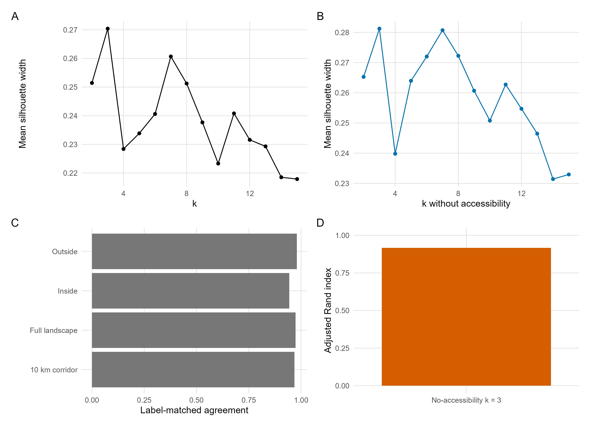
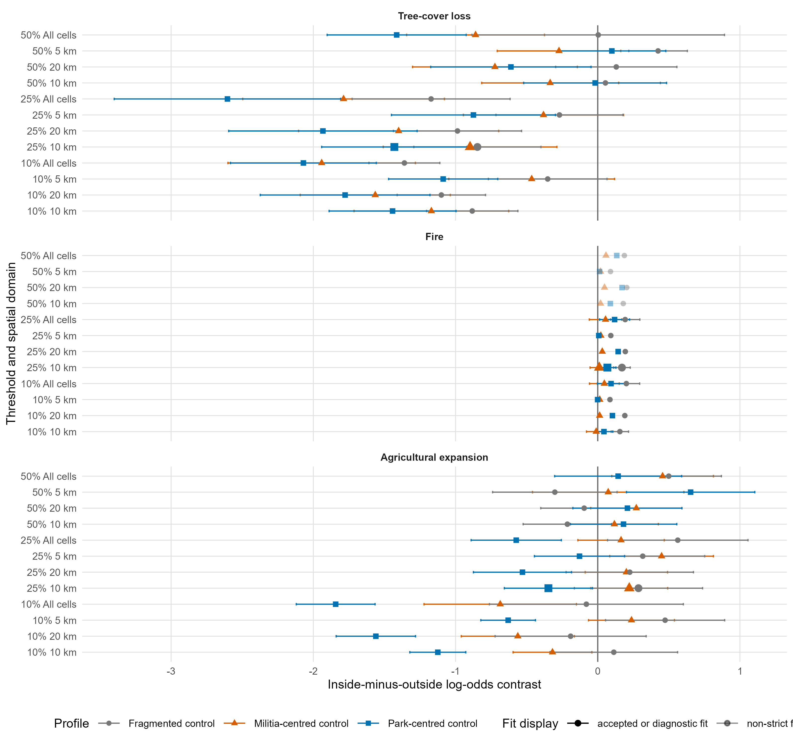
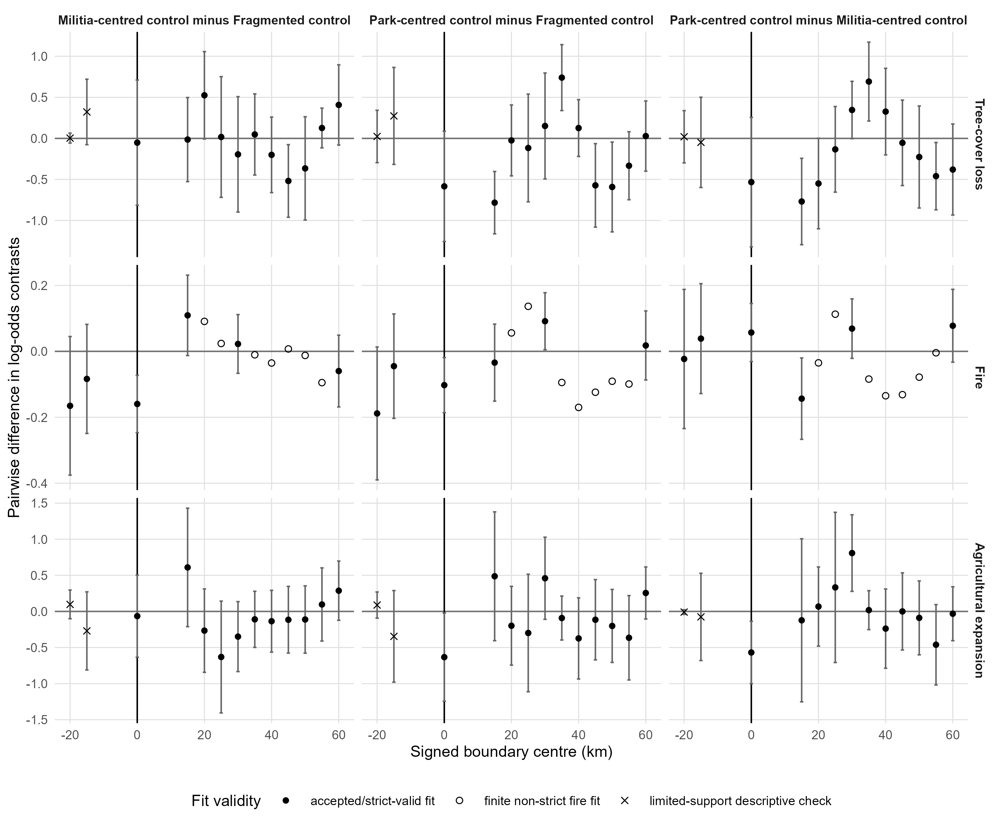

All analyses used the canonical 500 m grid and land mask. Park side was assigned from signed distance to the legal park boundary, with negative values inside the park and positive values outside. Environmental, hydrological, soil, vegetation, settlement, and accessibility covariates were processed to the common grid, transformed where needed, and standardized before k-means clustering. Candidate k values from 2 to 15 were evaluated on the fixed 20,000-cell silhouette sample with seed 42, 25 random starts, final-fit seed 123, and an eight-neighbour de-speckling rule for isolated labels. The frozen k = 3 partition remains authoritative. The accessibility-removal audit retained the Depression and Plateau groups and did not trigger outcome-model reruns. The symmetric 10 km corridor is the primary spatial design; all cells and 5, 20 km corridors are sensitivity domains. The groups are landscape comparison strata, not bounded socio-ecological entities. SESU2 is outside the primary inferential scope.
Territorial-control profiles were reconstructed by a single expert before inspecting disturbance outcomes. The source hierarchy prioritized dated, spatially interpretable historical evidence and reconciled conflicting evidence by assigning the profile best supported for each landscape group-year. Fragmented control indicates no actor-centred territorial control; militia-centred control indicates practical territorial control centred on armed-group presence; park-centred control indicates practical territorial control centred on park authority. These labels describe practical control and are distinct from legitimacy or exclusive sovereignty. Transition-year and episode-omission diagnostics evaluate sensitivity to chronology uncertainty.
Fire used ESA FireCCI v5.1 products for 2001-2020 and official monthly files for 2021-2022. Seasonal fire used inclusive DOY 100-300, whole-cell area averaging, and thresholds 0.10, 0.25, and 0.50. The final missingness-bound audit reproduced the authoritative tau025 classifications exactly and found no fully unobserved April-October native pixels that could alter the primary fire analysis. Tree-cover loss used the first year cumulative loss reached the threshold under the fixed 30% baseline-forest mask. Agricultural expansion used the first annual transition to threshold cropland. Tree-cover loss and agricultural expansion used post-event risk-set exclusion.
Fire used the beta-binomial profile model with complete profile-specific contrasts and pairwise differences. Strict-valid optimizer criteria required finite coefficients and standard errors, convergence code 0, positive-definite Hessian, full model rank, and maximum framework and numerical gradients below 0.001. Sparse tree-cover-loss and agricultural-expansion analyses used SESU-year two-stage contrasts with Haldane-Anscombe correction, inverse-variance weights, HC3 covariance, and unweighted sensitivity. Boundary-location diagnostics used the legal boundary, spaced outer pseudo-boundaries, dense outer-gradient sensitivity, and limited inner checks. They are deterministic spatial diagnostics and not a randomized null distribution.
The implemented boundary-specificity classifier first returned inconclusive when event support or fit diagnostics were inadequate, and agriculture was classified as inconclusive because of sparse support and unstable pseudo-boundary fits. Otherwise, a finding was classified as boundary-specific support when the actual estimate was outside the +20/+40/+60 km spaced-outer range, outside the dense outer 80% envelope, and the inner checks were qualitatively distinct. A finding was classified as partial boundary-specific support when the actual estimate was outside either the spaced-outer range or the dense outer 80% envelope but did not satisfy all boundary-specific criteria. Findings were classified as not boundary-specific when the actual estimate was not distinct from the pseudo-boundary diagnostics.
Covariates used to construct the frozen landscape comparison groups.
| Covariate | Source product | Reference period | Native resolution | 500 m processing | Transformation | Analytical role |
|---|---|---|---|---|---|---|
| Elevation | Copernicus DEM GLO-30 | static | 30 m | mean elevation on canonical grid | standardized | landscape comparison-group clustering covariate |
| Slope | Derived from Copernicus DEM GLO-30 in R | static | derived 30 m | terrain slope derived then aggregated to canonical grid | standardized | landscape comparison-group clustering covariate |
| Baseline forest indicator | Hansen Global Forest Change v1.12 tree cover in 2000 | 2000 | 30 m | binary >=30% baseline-forest indicator on canonical grid | binary indicator | landscape comparison-group clustering covariate |
| Distance to permanent water | JRC Global Surface Water v1.4 | permanent water from seasonality = 12 or occurrence >=90% | 30 m | distance to permanent-water mask on canonical grid | distance transformed where skewed, then standardized | landscape comparison-group clustering covariate |
| Mean annual precipitation | CHIRPS daily precipitation | 1981-2010 annual mean | approximately 5 km | annual means aggregated to canonical grid | standardized | landscape comparison-group clustering covariate |
| Potential evapotranspiration | TerraClimate | 1981-2010 annual mean | approximately 4 km | annual means aggregated to canonical grid | standardized | landscape comparison-group clustering covariate |
| Actual evapotranspiration | TerraClimate | 1981-2010 annual mean | approximately 4 km | annual means aggregated to canonical grid | standardized | landscape comparison-group clustering covariate |
| Water balance | CHIRPS precipitation minus TerraClimate PET | 1981-2010 annual mean | derived | derived after climate processing on canonical grid | standardized | landscape comparison-group clustering covariate |
| Aridity | P / (PET + 1), using CHIRPS precipitation and TerraClimate PET | 1981-2010 annual mean | derived | derived after climate processing on canonical grid | standardized | landscape comparison-group clustering covariate |
| Soil organic carbon | SoilGrids 0-30 cm depth-weighted SOC | static | 250 m | depth-weighted mean aggregated to canonical grid | standardized | landscape comparison-group clustering covariate |
| Soil pH | SoilGrids 0-30 cm depth-weighted pH | static | 250 m | depth-weighted mean aggregated to canonical grid | standardized | landscape comparison-group clustering covariate |
| Clay | SoilGrids 0-30 cm depth-weighted clay | static | 250 m | depth-weighted mean aggregated to canonical grid | standardized | landscape comparison-group clustering covariate |
| Sand | SoilGrids 0-30 cm depth-weighted sand | static | 250 m | depth-weighted mean aggregated to canonical grid | standardized | landscape comparison-group clustering covariate |
| Distance to baseline built-up areas | GHSL P2023A built-up surface | baseline 2000-or-earlier | 100 m | distance to baseline built-up surface on canonical grid | distance transformed where skewed, then standardized | landscape comparison-group clustering covariate |
| Travel time to cities | Oxford/MAP accessibility_to_cities_2015_v1_0 | 2015 | approximately 1 km | travel-time surface aggregated to canonical grid | transformed where skewed, then standardized | landscape comparison-group clustering covariate |
Mean silhouette width for k = 2-15.
| k | mean silhouette width | sample size | sample seed | selected |
|---|---|---|---|---|
| 2 | 0.251440254786702 | 20000 | 42 | 0 |
| 3 | 0.270407389443984 | 20000 | 42 | 1 |
| 4 | 0.228383923313871 | 20000 | 42 | 0 |
| 5 | 0.233849469296027 | 20000 | 42 | 0 |
| 6 | 0.24060849040407 | 20000 | 42 | 0 |
| 7 | 0.260680561000788 | 20000 | 42 | 0 |
| 8 | 0.251238932123871 | 20000 | 42 | 0 |
| 9 | 0.237662765692864 | 20000 | 42 | 0 |
| 10 | 0.223296220146729 | 20000 | 42 | 0 |
| 11 | 0.240806683222841 | 20000 | 42 | 0 |
| 12 | 0.231572878719996 | 20000 | 42 | 0 |
| 13 | 0.229288757277202 | 20000 | 42 | 0 |
| 14 | 0.218504759956145 | 20000 | 42 | 0 |
| 15 | 0.217877267079711 | 20000 | 42 | 0 |
Near-reproduction and no-accessibility sensitivity diagnostics.
| Metric | Value |
|---|---|
| Authoritative near-reproduction ARI | 0.99723575428417 |
| Full label-matched agreement | 99.9074% |
| 10 km agreement | 99.8820% |
| Differing cells | 230 |
| Differing cells (%) | 0.0927% |
| No-accessibility selected k | 3 |
| No-accessibility k = 3 ARI | 0.916026767359794 |
| No-accessibility full agreement | 0.973904643065591 |
| No-accessibility 10 km agreement | 0.967904314319442 |
| Retained group identity | Depression and Plateau retained |
| Outcome-model rerun triggered | No |
| Seed-stability rows | 25 |
Tau025 balance and event support across candidate spatial designs.
| design | inside cells | outside cells | median absolute SMD | maximum absolute SMD | tau025 fire events | tau025 tree-cover-loss events | tau025 agricultural-expansion events | fire fit status | sparse-outcome support status | design role |
|---|---|---|---|---|---|---|---|---|---|---|
| All cells | 37963 | 166448 | 0.4289174 | 1.7038772 | 2468094 | 5460 | 2685 | strict-valid fit available | two-stage sparse-outcome support assessed | sensitivity or support diagnostic |
| 5 km | 11187 | 11418 | 0.1191461 | 0.3714200 | 252143 | 313 | 392 | no strict-valid fit in spatial-design screen | two-stage sparse-outcome support assessed | sensitivity or support diagnostic |
| 10 km | 20548 | 22006 | 0.1871474 | 0.7334423 | 508320 | 519 | 518 | strict-valid fit available | two-stage sparse-outcome support assessed | primary spatial estimand |
| 20 km | 33130 | 42022 | 0.2988589 | 1.2539226 | 928993 | 876 | 587 | no strict-valid fit in spatial-design screen | two-stage sparse-outcome support assessed | sensitivity or support diagnostic |
Support in the final tau025 10 km actual-boundary surface; SESU2 counts are descriptive and are not added to retained-group primary totals.
| Landscape group | inside_cells | outside_cells | inside_to_outside_cell_ratio | Agricultural expansion outside | Agricultural expansion inside | Fire outside | Fire inside | Tree-cover loss outside | Tree-cover loss inside | Included in primary inference | Exclusion rationale |
|---|---|---|---|---|---|---|---|---|---|---|---|
| Depression | 7612 | 10019 | 0.7597565 | 261 | 254 | 89396 | 75745 | 262 | 142 | TRUE | |
| SESU2 / Lufira Plain (outside inferential scope) | 786 | 1557 | 0.5048170 | 9 | 2 | 25735 | 12396 | 12 | 0 | FALSE | Small and spatially restricted park-interior support; no frozen pre-outcome territorial-control chronology for primary inference. |
| Plateau | 12936 | 11987 | 1.0791691 | 3 | 0 | 165724 | 177455 | 111 | 4 | TRUE |
Frozen annual territorial-control profile assignments.
| Panel | Landscape group | Year | Territorial-control profile | Episode ID |
|---|---|---|---|---|
| S6A annual profile assignment | Depression | 2001 | Fragmented control | D-F1 |
| S6A annual profile assignment | Depression | 2002 | Fragmented control | D-F1 |
| S6A annual profile assignment | Depression | 2003 | Fragmented control | D-F1 |
| S6A annual profile assignment | Depression | 2004 | Militia-centred control | D-M1 |
| S6A annual profile assignment | Depression | 2005 | Militia-centred control | D-M1 |
| S6A annual profile assignment | Depression | 2006 | Militia-centred control | D-M1 |
| S6A annual profile assignment | Depression | 2007 | Fragmented control | D-F2 |
| S6A annual profile assignment | Depression | 2008 | Fragmented control | D-F2 |
| S6A annual profile assignment | Depression | 2009 | Fragmented control | D-F2 |
| S6A annual profile assignment | Depression | 2010 | Fragmented control | D-F2 |
| S6A annual profile assignment | Depression | 2011 | Fragmented control | D-F2 |
| S6A annual profile assignment | Depression | 2012 | Fragmented control | D-F2 |
| S6A annual profile assignment | Depression | 2013 | Militia-centred control | D-M2 |
| S6A annual profile assignment | Depression | 2014 | Militia-centred control | D-M2 |
| S6A annual profile assignment | Depression | 2015 | Militia-centred control | D-M2 |
| S6A annual profile assignment | Depression | 2016 | Militia-centred control | D-M2 |
| S6A annual profile assignment | Depression | 2017 | Park-centred control | D-P1 |
| S6A annual profile assignment | Depression | 2018 | Park-centred control | D-P1 |
| S6A annual profile assignment | Depression | 2019 | Park-centred control | D-P1 |
| S6A annual profile assignment | Depression | 2020 | Park-centred control | D-P1 |
| S6A annual profile assignment | Depression | 2021 | Park-centred control | D-P1 |
| S6A annual profile assignment | Depression | 2022 | Park-centred control | D-P1 |
| S6A annual profile assignment | Plateau | 2001 | Fragmented control | P-F1 |
| S6A annual profile assignment | Plateau | 2002 | Fragmented control | P-F1 |
| S6A annual profile assignment | Plateau | 2003 | Fragmented control | P-F1 |
| S6A annual profile assignment | Plateau | 2004 | Militia-centred control | P-M1 |
| S6A annual profile assignment | Plateau | 2005 | Militia-centred control | P-M1 |
| S6A annual profile assignment | Plateau | 2006 | Militia-centred control | P-M1 |
| S6A annual profile assignment | Plateau | 2007 | Fragmented control | P-F2 |
| S6A annual profile assignment | Plateau | 2008 | Fragmented control | P-F2 |
| S6A annual profile assignment | Plateau | 2009 | Fragmented control | P-F2 |
| S6A annual profile assignment | Plateau | 2010 | Fragmented control | P-F2 |
| S6A annual profile assignment | Plateau | 2011 | Park-centred control | P-P1 |
| S6A annual profile assignment | Plateau | 2012 | Park-centred control | P-P1 |
| S6A annual profile assignment | Plateau | 2013 | Militia-centred control | P-M2 |
| S6A annual profile assignment | Plateau | 2014 | Militia-centred control | P-M2 |
| S6A annual profile assignment | Plateau | 2015 | Militia-centred control | P-M2 |
| S6A annual profile assignment | Plateau | 2016 | Park-centred control | P-P2 |
| S6A annual profile assignment | Plateau | 2017 | Park-centred control | P-P2 |
| S6A annual profile assignment | Plateau | 2018 | Park-centred control | P-P2 |
| S6A annual profile assignment | Plateau | 2019 | Park-centred control | P-P2 |
| S6A annual profile assignment | Plateau | 2020 | Park-centred control | P-P2 |
| S6A annual profile assignment | Plateau | 2021 | Park-centred control | P-P2 |
| S6A annual profile assignment | Plateau | 2022 | Park-centred control | P-P2 |
Approved episode evidence supporting the frozen chronology.
| Panel | Landscape group | Year | Territorial-control profile | Episode ID | Operational interpretation | Key documented events | Primary evidence sources | Transition rationale | Coding confidence | Alternative plausible transition years | Source manuscript location |
|---|---|---|---|---|---|---|---|---|---|---|---|
| S6B historical episode evidence | Depression | 2001-2003 | Fragmented control | D-F1 | Weak, spatially limited park authority in the Kamalondo Depression with locally negotiated access and no consolidated militia territorial control. | Armed actors were reported using Upemba as refuge from 2002. Emergency assistance and follow-up provisioning during 2000-2002 enabled only a limited resumption of patrol activity, concentrated principally around the Plateau core, while ICCN leadership continued to rely heavily on negotiation and contact with armed actors rather than consolidated coercive capacity. OKA convened a November 2003 table ronde involving customary authorities and ICCN, showing negotiated conservation rather than consolidated enforcement. | Hasson 2003; Nouvelles Approches 2002-2004; OKA Kanyundu 2018; Van Leeuwe et al. 2009; Hasson 2015 | The study window imposes the 2001 start. The episode ends in 2003 because the 28 May 2004 Lusinga attack marks a dated rupture from weak negotiated authority to open militia-centred coercion and park withdrawal. | Moderate | 2000 start is outside the remote-sensing window; 2004 is the dated transition year rather than a plausible alternative for the fragmented episode. | Chapter 1 historical manuscript, governance chronology, 2001-2003; Upemba history manuscript, Chapter 11, section on the emergence of Mai-Mai and negotiated conservation |
| S6B historical episode evidence | Depression | 2004-2006 | Militia-centred control | D-M1 | Militia and military coercion dominated practical access conditions after the Lusinga attack; lawful park authority retreated from the Depression and routine enforcement collapsed. | On 28 May 2004, around forty Mai-Mai fighters attacked Lusinga, killing park staff and family members, taking hostages, burning tourist rondavels, looting archives and possessions, and precipitating withdrawal from the Kamalondo Depression. The government then deployed roughly 85-100 FARDC soldiers to Lusinga for about two years, while reports describe military-linked poaching and constrained ranger authority. The broader Mitwaba-Pweto-Manono conflict displaced villages and disrupted access routes; Gédéon surrendered at Mitwaba on 16 May 2006. | Van Leeuwe et al. 2009; Hasson 2015; Nouvelles Approches 2002-2004; Hecht 2006; Human Rights Watch 2006 | The 2004 start is anchored by the dated Lusinga attack. The 2006 end follows Gédéon's surrender and demobilization dynamics, but the following period is coded as fragmented rather than park-centred because reopening and ranger salary restoration did not restore consolidated park control. | High | 2007 is a plausible first post-conflict fragmented year; no one-year alternative before 2004 is plausible because the attack is a dated rupture. | Chapter 1 historical manuscript, governance chronology, 2004-2006; Upemba history manuscript, Chapter 11, section on the 2004 attack |
| S6B historical episode evidence | Depression | 2007-2012 | Fragmented control | D-F2 | Post-demobilization conditions combined residual armed presence, negotiated conservation through customary authorities, and limited conservation re-entry without dominant park control in the Depression. | From 2007 BAK lobbied for renewed support, and BAK-ICCN formalized a contract in April 2008. FZS scouting and the WCS survey in 2008 documented catastrophic governance conditions, rent-seeking allegations, and residual Mai-Mai presence around Mbwe along the Lufira. OKA and BAK activity, including the 2010 Chief Kayumba declaration recognizing the 1975 boundary, indicate negotiated recognition of park space. FZS technical support from 2011 remained concentrated around Lusinga and the plateaus; the Depression stayed beyond effective operational reach. | Van Leeuwe et al. 2009; Hasson 2015; FZS 2009; OKA Kanyundu 2018; Chief Kayumba 2010 | The 2007 start follows Gédéon's 2006 surrender and partial re-entry. The Depression episode continues through 2012 because donor-supported operations strengthened primarily around Lusinga and the Plateau, while evidence for systematic Depression penetration appears only in late 2016 and early 2017. | Moderate | 2008 is a plausible alternative start for renewed negotiated conservation because of the BAK-ICCN contract; 2011-2012 are not coded park-centred in the Depression because operational reach remained spatially limited. | Chapter 1 historical manuscript, governance chronology, 2007-2010; Upemba history manuscript, Chapter 12, sections on BAK, FZS, and negotiated boundary recognition |
| S6B historical episode evidence | Depression | 2013-2016 | Militia-centred control | D-M2 | Renewed armed insecurity and weak state or park access made militia-linked control and coercive access constraints more important than park-centred authority in the Depression. | After Gedeon's 2011 escape, Bakata Katanga activity intensified across 2013-2016. OCHA described renewed insecurity with large-scale displacement and more than 1,000 houses burned in 70 villages between October 2013 and mid-January 2014. MONUSCO reported separation of 82 children from Mai-Mai in August 2013, Radio Okapi linked the Mbwe corridor inside Upemba to armed territorial and extractive control in April 2013, and later reporting described displacement, weak state access, elephant-poaching networks, and constrained park penetration. Katembo's appointment in 2015 strengthened leadership, but systematic Depression penetration is documented only in late 2016 and early 2017. | OCHA 2013; MONUSCO 2013; Radio Okapi 2013a; Asmani 2015; Ngoy 2015; Huisman 2017; Katembo 2016; Katembo 2017 | The 2013 start follows renewed armed mobilization and 2012-2013 incidents around Mbwe and Upemba. The episode ends in 2016 because late-2016 operations begin to penetrate the Depression, but the Depression transition to park-centred control is coded in 2017 because operational reach becomes clear only then. | Moderate | 2012 is a plausible earlier start for renewed militia-centred influence; 2016 is a plausible alternative park-centred transition year but is retained as transitional rather than full Depression control. | Chapter 1 historical manuscript, governance chronology, 2011-2016; Upemba history manuscript, Chapter 12, sections on renewed insecurity and Bakata Katanga |
| S6B historical episode evidence | Depression | 2017-2022 | Park-centred control | D-P1 | Expanded park operational reach, public-private management capacity, and renewed patrol penetration made park authority the central practical control actor in the Depression, though control remained incomplete and insecurity persisted. | Late-2016 and early-2017 elephant-protection operations under Rodrigue Katembo deployed ranger teams along the Bukama-Lake Kabwe-Kasale axis and toward Manono and Malemba-Nkulu, documenting renewed patrol penetration beyond the Plateau core into the Kamalondo Depression. The formal public-private partnership began in July 2017 after creation of the Upemba-Kundelungu Complex in June 2016 and appointment of Robert Muir as chief park warden. Later professionalization included ranger training in 2019-2020 and disruption of elephant-poaching networks, while attacks in 2021 and 2022 show partial rather than exclusive control. | Katembo 2016; Katembo 2017; Brugière 2020; d'Huart 2017; Villaespesa 2020; IUCN NL 2021; MONUSCO 2022a; MONUSCO 2022b | The Depression transition is one year later than the Plateau because the evidence for systematic reach into the Depression becomes clear only in late 2016 and early 2017, whereas Plateau strengthening began earlier around the operational core. | Moderate | 2016 is the principal plausible alternative transition year because the first elephant-protection operations began in late 2016. | Chapter 1 historical manuscript, governance chronology, 2016-2022; Upemba history manuscript, Chapter 12, sections on elephant-protection operations and the public-private partnership |
| S6B historical episode evidence | Plateau | 2001-2003 | Fragmented control | P-F1 | Weak but not absent park authority persisted around the Plateau core, supported by modest relief and negotiation, while no actor consolidated territorial control. | Armed actors were reported using Upemba as refuge from 2002. Emergency assistance and follow-up provisioning during 2000-2002 enabled only a limited resumption of patrol activity, concentrated principally around the Plateau core, while ICCN leadership continued to rely heavily on negotiation and contact with armed actors rather than consolidated coercive capacity. OKA convened a November 2003 table ronde involving customary authorities and ICCN, showing fragmented, negotiated conservation rather than dominant enforcement. | Hasson 2003; Nouvelles Approches 2002-2004; OKA Kanyundu 2018; Van Leeuwe et al. 2009; Hasson 2015 | The 2001 start is imposed by the remote-sensing study period. The episode ends in 2003 because the May 2004 Lusinga attack produced a dated collapse of the Plateau headquarters and shifted access conditions toward militia-centred coercion. | Moderate | 2000 start is outside the remote-sensing window; no one-year alternative before 2004 is as well supported as the dated Lusinga rupture. | Chapter 1 historical manuscript, governance chronology, 2001-2003; Upemba history manuscript, Chapter 11, section on the emergence of Mai-Mai and negotiated conservation |
| S6B historical episode evidence | Plateau | 2004-2006 | Militia-centred control | P-M1 | Militia attack and regional armed conflict directly undermined the Plateau headquarters and made militia-centred coercion the dominant practical condition around Lusinga and Mitwaba. | The 28 May 2004 attack on Lusinga killed staff and family members, destroyed infrastructure, looted archives, and forced staff families to flee. FARDC soldiers were deployed to Lusinga for about two years, and reports describe heavy military-linked poaching. The same period coincided with peak Mai-Mai strength in the Mitwaba zone and the wider Triangle of Death, with village burnings, displacement, and disrupted road access. Gédéon's May 2006 surrender ended the first conflict episode. | Van Leeuwe et al. 2009; Hasson 2015; Nouvelles Approches 2002-2004; Hecht 2006; Human Rights Watch 2006 | The 2004 start is the dated attack on the Plateau headquarters. The 2006 end follows Gédéon's surrender and demobilization, but 2007 is fragmented rather than park-centred because residual Mai-Mai presence and weak institutional capacity persisted. | High | 2007 is the plausible post-conflict transition year; no alternative date is stronger than 28 May 2004 for the episode start. | Chapter 1 historical manuscript, governance chronology, 2004-2006; Upemba history manuscript, Chapter 11, section on the 2004 attack |
| S6B historical episode evidence | Plateau | 2007-2010 | Fragmented control | P-F2 | Residual militia presence, negotiated coexistence, and externally supported but still weak conservation activity produced fragmented access rather than militia-centred or park-centred dominance. | From 2007 BAK lobbied for EU support, a BAK-ICCN contract was signed in April 2008, FZS scouted in 2008, and WCS surveyed in 2008. Reports still described catastrophic governance, rent-seeking, and residual Mai-Mai in the park, with ICCN maintaining contact with a quiet Mbwe group. In 2010 Chief Kayumba recognized the 1975 boundary, indicating negotiated recognition. The Plateau episode ends in 2010 because the FZS technical-assistance phase began in 2010-2011 and materially strengthened operations around Lusinga and the Plateau core. | Van Leeuwe et al. 2009; Hasson 2015; FZS 2009; OKA Kanyundu 2018; Chief Kayumba 2010 | The 2007 start follows demobilization after Gédéon's surrender. The 2010 end is justified by the transition to donor-supported technical assistance around Lusinga and the plateaus beginning in 2010-2011. | Moderate | 2008 is a plausible start because of the BAK-ICCN contract; 2011 is a plausible alternative park-centred start because operational strengthening was gradual. | Chapter 1 historical manuscript, governance chronology, 2007-2010; Upemba history manuscript, Chapter 12, sections on BAK, FZS, and negotiated boundary recognition |
| S6B historical episode evidence | Plateau | 2011-2012 | Park-centred control | P-P1 | Relative park-centred configuration around Lusinga and the accessible Plateau core, with strengthened management and operational presence but not uniform or uncontested control across the wider park. | The EU-supported FZS technical-assistance phase began across 2010-2011 and strengthened infrastructure, management capacity, and operational presence around Lusinga and the accessible Plateau core. Hance reported renewed activity and raids around Lusinga in 2012, and Radio Okapi reported the killing of the park manager on 18 December 2012, indicating that park-centred control remained relative rather than uniform or uncontested. | Hasson 2015; Aerden 2012; Hance 2012a; Hance 2012b; Radio Okapi 2012b | The frozen 2011 start reflects the beginning of the EU-supported technical-assistance phase across 2010-2011 and a relative strengthening around the Plateau core. The episode ends in 2012 because renewed attacks and abandonment of positions in 2013 mark a return to militia-centred coercive conditions on the Plateau. | Moderate | 2010 is a plausible earlier start because operational strengthening began gradually during 2010-2011; 2013 is not retained because FZS withdrew in August 2013 after deterioration was already evident. | Chapter 1 historical manuscript, governance chronology, 2011-2013; Upemba history manuscript, Chapter 12, section on the FZS technical-assistance phase |
| S6B historical episode evidence | Plateau | 2013-2015 | Militia-centred control | P-M2 | Renewed Bakata Katanga and related armed activity contracted park reach around Plateau positions and made militia-centred coercive control the dominant practical condition. | After Gédéon's 2011 escape, Bakata Katanga activity increased and Mbwe was repeatedly linked to armed actors. In 2014 Radio Okapi reported attacks around park positions, ambushes, hostage-taking, theft of firearms, burning or destruction of guard posts, abandonment of posts, and retreat of guards and families to Lusinga. FARDC deployed in response, and reporting described hunting in zones escaping managerial control. Interview-based chronology indicates declining militia activity from 2015. | OCHA 2013; Asmani 2015; MONUSCO 2013; Radio Okapi 2013a; Radio Okapi 2014a; Radio Okapi 2014b; Radio Okapi 2014c; Radio Okapi 2014d; Huisman 2017 | The 2013 start follows renewed attacks and reported armed control around Mbwe and Mitwaba after 2012. The 2015 end reflects declining militia activity and precedes Gédéon's October 2016 surrender and renewed systematic park operations on the Plateau. | Moderate | 2012 is a plausible earlier start given Gédéon's escape and 2012 Lusinga raids; 2016 is the coded transition back to park-centred control on the Plateau. | Chapter 1 historical manuscript, governance chronology, 2013-2015; Upemba history manuscript, Chapter 12, section on renewed insecurity around Plateau positions |
| S6B historical episode evidence | Plateau | 2016-2022 | Park-centred control | P-P2 | Operational strengthening, renewed systematic patrols, and public-private management made park authority the central practical control actor around the Plateau core, while insecurity persisted. | Rodrigue Katembo's 2015 appointment and field leadership coincided with declining Mai-Mai activity and Gédéon's surrender in October 2016. A late-2016 elephant-protection operation reportedly deployed 60 rangers, with follow-up operations in early 2017. ICCN created the Upemba-Kundelungu Complex in June 2016 and appointed Robert Muir as chief park warden; a formal public-private management arrangement followed in July 2017. Ranger training and professionalization occurred in 2019-2020, while attacks in 2021 and 2022 show partial rather than exclusive control. | Katembo 2016; Katembo 2017; Huisman 2017; d'Huart 2017; Brugière 2020; Villaespesa 2020; IUCN NL 2021; MONUSCO 2022a; MONUSCO 2022b | The Plateau transition is coded in 2016 rather than 2017 because operational strengthening, Gédéon's surrender, and complex-level management preceded the formal PPP contract. The episode continues through 2022 because no later evidence supports a different frozen profile before the study endpoint. | High | 2017 is the principal plausible alternative transition year because the formal PPP contract began then. | Chapter 1 historical manuscript, governance chronology, 2016-2022; Upemba history manuscript, Chapter 12, section on operational recovery and the public-private partnership |
Landscape-year, calendar-year, and episode support for each territorial-control profile.
| profile | landscape-group years | calendar years | distinct historical episodes | Depression years | Plateau years |
|---|---|---|---|---|---|
| Militia-centred control | 13 | 7 | 4 | 7 | 6 |
| Fragmented control | 16 | 9 | 4 | 9 | 7 |
| Park-centred control | 15 | 9 | 3 | 6 | 9 |
Exact unrounded primary profile-specific contrasts.
| Outcome | Profile | Estimate | SE | Lower 95% | Upper 95% | Model | Events | Spatial domain | Threshold | Fit validity |
|---|---|---|---|---|---|---|---|---|---|---|
| Fire | Militia-centred control | 0.01070912 | 0.03300986 | -0.053989019 | 0.07540727 | Strict-valid beta-binomial | 508320 | Symmetric 10 km boundary corridor | tau025 | strict-valid |
| Fire | Fragmented control | 0.17028843 | 0.02974506 | 0.111989185 | 0.22858767 | Strict-valid beta-binomial | 508320 | Symmetric 10 km boundary corridor | tau025 | strict-valid |
| Fire | Park-centred control | 0.06782822 | 0.03055247 | 0.007946483 | 0.12770995 | Strict-valid beta-binomial | 508320 | Symmetric 10 km boundary corridor | tau025 | strict-valid |
| Tree-cover loss | Fragmented control | -0.84608147 | 0.22799776 | -1.292948862 | -0.39921409 | Inverse-variance-weighted two-stage HC3 | 519 | Symmetric 10 km boundary corridor | tau025 | accepted primary sparse-outcome fit |
| Tree-cover loss | Militia-centred control | -0.89784523 | 0.31162513 | -1.508619273 | -0.28707119 | Inverse-variance-weighted two-stage HC3 | 519 | Symmetric 10 km boundary corridor | tau025 | accepted primary sparse-outcome fit |
| Tree-cover loss | Park-centred control | -1.43025410 | 0.26064694 | -1.941112713 | -0.91939549 | Inverse-variance-weighted two-stage HC3 | 519 | Symmetric 10 km boundary corridor | tau025 | accepted primary sparse-outcome fit |
| Agricultural expansion | Fragmented control | 0.28648585 | 0.22999698 | -0.164299946 | 0.73727164 | Inverse-variance-weighted two-stage HC3 | 518 | Symmetric 10 km boundary corridor | tau025 | accepted primary sparse-outcome fit |
| Agricultural expansion | Militia-centred control | 0.22175623 | 0.13778617 | -0.048299693 | 0.49181215 | Inverse-variance-weighted two-stage HC3 | 518 | Symmetric 10 km boundary corridor | tau025 | accepted primary sparse-outcome fit |
| Agricultural expansion | Park-centred control | -0.34696111 | 0.15811662 | -0.656863989 | -0.03705824 | Inverse-variance-weighted two-stage HC3 | 518 | Symmetric 10 km boundary corridor | tau025 | accepted primary sparse-outcome fit |
Exact unrounded primary pairwise differences between profile contrasts.
| Outcome | Comparison | Estimate | SE | Lower 95% | Upper 95% | Model | Spatial domain | Threshold | Fit validity |
|---|---|---|---|---|---|---|---|---|---|
| Fire | Militia-centred control minus Fragmented control | -0.15957931 | 0.04443409 | -0.24666852 | -0.07249009 | Strict-valid beta-binomial | Symmetric 10 km boundary corridor | tau025 | strict-valid |
| Fire | Park-centred control minus Militia-centred control | 0.05711909 | 0.04497817 | -0.03103649 | 0.14527468 | Strict-valid beta-binomial | Symmetric 10 km boundary corridor | tau025 | strict-valid |
| Fire | Park-centred control minus Fragmented control | -0.10246021 | 0.04264026 | -0.18603358 | -0.01888684 | Strict-valid beta-binomial | Symmetric 10 km boundary corridor | tau025 | strict-valid |
| Tree-cover loss | Park-centred control minus Fragmented control | -0.58417263 | 0.34244537 | -1.25535323 | 0.08700797 | Inverse-variance-weighted two-stage HC3 | Symmetric 10 km boundary corridor | tau025 | accepted primary sparse-outcome fit |
| Tree-cover loss | Militia-centred control minus Fragmented control | -0.05176376 | 0.38901663 | -0.81422235 | 0.71069483 | Inverse-variance-weighted two-stage HC3 | Symmetric 10 km boundary corridor | tau025 | accepted primary sparse-outcome fit |
| Tree-cover loss | Park-centred control minus Militia-centred control | -0.53240887 | 0.40243172 | -1.32116054 | 0.25634280 | Inverse-variance-weighted two-stage HC3 | Symmetric 10 km boundary corridor | tau025 | accepted primary sparse-outcome fit |
| Agricultural expansion | Park-centred control minus Fragmented control | -0.63344696 | 0.31143982 | -1.24385778 | -0.02303614 | Inverse-variance-weighted two-stage HC3 | Symmetric 10 km boundary corridor | tau025 | accepted primary sparse-outcome fit |
| Agricultural expansion | Militia-centred control minus Fragmented control | -0.06472962 | 0.29067375 | -0.63443970 | 0.50498046 | Inverse-variance-weighted two-stage HC3 | Symmetric 10 km boundary corridor | tau025 | accepted primary sparse-outcome fit |
| Agricultural expansion | Park-centred control minus Militia-centred control | -0.56871735 | 0.22051748 | -1.00092367 | -0.13651102 | Inverse-variance-weighted two-stage HC3 | Symmetric 10 km boundary corridor | tau025 | accepted primary sparse-outcome fit |
Sparse-outcome weighted primary and unweighted sensitivity estimates.
| Outcome | Weighting | Estimand | Profile or comparison | Estimate | SE | Lower 95% | Upper 95% | Interpretive change from primary |
|---|---|---|---|---|---|---|---|---|
| Tree-cover loss | Weighted | Profile contrast | Fragmented control | -0.8460814738 | 0.2279978 | -1.29294886 | -0.39921409 | primary specification |
| Tree-cover loss | Weighted | Profile contrast | Militia-centred control | -0.8978452333 | 0.3116251 | -1.50861927 | -0.28707119 | primary specification |
| Tree-cover loss | Weighted | Profile contrast | Park-centred control | -1.4302541020 | 0.2606469 | -1.94111271 | -0.91939549 | primary specification |
| Tree-cover loss | Unweighted | Profile contrast | Fragmented control | -0.8812600723 | 0.2429719 | -1.35747632 | -0.40504382 | sensitivity only |
| Tree-cover loss | Unweighted | Profile contrast | Militia-centred control | -0.8807251730 | 0.3624481 | -1.59111046 | -0.17033988 | sensitivity only |
| Tree-cover loss | Unweighted | Profile contrast | Park-centred control | -1.7616644610 | 0.3104879 | -2.37020952 | -1.15311940 | sensitivity only |
| Agricultural expansion | Weighted | Profile contrast | Fragmented control | 0.2864858475 | 0.2299970 | -0.16429995 | 0.73727164 | primary specification |
| Agricultural expansion | Weighted | Profile contrast | Militia-centred control | 0.2217562310 | 0.1377862 | -0.04829969 | 0.49181215 | primary specification |
| Agricultural expansion | Weighted | Profile contrast | Park-centred control | -0.3469611150 | 0.1581166 | -0.65686399 | -0.03705824 | primary specification |
| Agricultural expansion | Unweighted | Profile contrast | Fragmented control | 0.2409689362 | 0.1537153 | -0.06030742 | 0.54224529 | sensitivity only |
| Agricultural expansion | Unweighted | Profile contrast | Militia-centred control | -0.0533925246 | 0.2782290 | -0.59871139 | 0.49192634 | sensitivity only |
| Agricultural expansion | Unweighted | Profile contrast | Park-centred control | -0.2849633931 | 0.1386163 | -0.55664637 | -0.01328042 | sensitivity only |
| Tree-cover loss | Weighted | Pairwise difference | Park-centred - Fragmented | -0.5841726282 | 0.3424454 | -1.25535323 | 0.08700797 | primary specification |
| Tree-cover loss | Weighted | Pairwise difference | Militia-centred - Fragmented | -0.0517637595 | 0.3890166 | -0.81422235 | 0.71069483 | primary specification |
| Tree-cover loss | Weighted | Pairwise difference | Park-centred - Militia-centred | -0.5324088687 | 0.4024317 | -1.32116054 | 0.25634280 | primary specification |
| Tree-cover loss | Unweighted | Pairwise difference | Park-centred - Fragmented | -0.8804043887 | 0.4000063 | -1.66440234 | -0.09640643 | sensitivity only |
| Tree-cover loss | Unweighted | Pairwise difference | Militia-centred - Fragmented | 0.0005348993 | 0.4350190 | -0.85208671 | 0.85315650 | sensitivity only |
| Tree-cover loss | Unweighted | Pairwise difference | Park-centred - Militia-centred | -0.8809392880 | 0.4760494 | -1.81397895 | 0.05210038 | sensitivity only |
| Agricultural expansion | Weighted | Pairwise difference | Park-centred - Fragmented | -0.6334469624 | 0.3114398 | -1.24385778 | -0.02303614 | primary specification |
| Agricultural expansion | Weighted | Pairwise difference | Militia-centred - Fragmented | -0.0647296165 | 0.2906737 | -0.63443970 | 0.50498046 | primary specification |
| Agricultural expansion | Weighted | Pairwise difference | Park-centred - Militia-centred | -0.5687173459 | 0.2205175 | -1.00092367 | -0.13651102 | primary specification |
| Agricultural expansion | Unweighted | Pairwise difference | Park-centred - Fragmented | -0.5259323294 | 0.1992657 | -0.91648591 | -0.13537875 | sensitivity only |
| Agricultural expansion | Unweighted | Pairwise difference | Militia-centred - Fragmented | -0.2943614608 | 0.3278838 | -0.93700181 | 0.34827889 | sensitivity only |
| Agricultural expansion | Unweighted | Pairwise difference | Park-centred - Militia-centred | -0.2315708685 | 0.2961481 | -0.81201054 | 0.34886880 | sensitivity only |
Profile and pairwise threshold sensitivities for the symmetric 10 km domain only.
| Outcome | Threshold | Estimand type | Profile or comparison | Estimate | SE | Lower 95% | Upper 95% | Event support | Model | Fit validity | Interpretation |
|---|---|---|---|---|---|---|---|---|---|---|---|
| Agricultural expansion | 10% | Profile contrast | Militia-centred control | -0.31824379 | NA | -0.595278396 | -0.04120919 | 882 | sparse_two_stage_weighted | accepted two-stage estimate | threshold sensitivity |
| Agricultural expansion | 10% | Profile contrast | Fragmented control | 0.11293277 | NA | -0.335711990 | 0.56157754 | 882 | sparse_two_stage_weighted | accepted two-stage estimate | threshold sensitivity |
| Agricultural expansion | 10% | Profile contrast | Park-centred control | -1.12463716 | NA | -1.321323383 | -0.92795094 | 882 | sparse_two_stage_weighted | accepted two-stage estimate | threshold sensitivity |
| Agricultural expansion | 10% | Pairwise difference | Militia-centred control minus Fragmented control | -0.43117657 | NA | -0.986745329 | 0.12439220 | 882 | sparse_two_stage_weighted | accepted two-stage estimate | threshold sensitivity |
| Agricultural expansion | 10% | Pairwise difference | Park-centred control minus Militia-centred control | -0.80639337 | NA | -1.109673229 | -0.50311351 | 882 | sparse_two_stage_weighted | accepted two-stage estimate | threshold sensitivity |
| Agricultural expansion | 10% | Pairwise difference | Park-centred control minus Fragmented control | -1.23756993 | NA | -1.754915586 | -0.72022428 | 882 | sparse_two_stage_weighted | accepted two-stage estimate | threshold sensitivity |
| Agricultural expansion | 25% | Profile contrast | Militia-centred control | 0.22175623 | NA | -0.048299693 | 0.49181215 | 518 | sparse_two_stage_weighted | accepted two-stage estimate | primary threshold |
| Agricultural expansion | 25% | Profile contrast | Fragmented control | 0.28648585 | NA | -0.164299946 | 0.73727164 | 518 | sparse_two_stage_weighted | accepted two-stage estimate | primary threshold |
| Agricultural expansion | 25% | Profile contrast | Park-centred control | -0.34696111 | NA | -0.656863989 | -0.03705824 | 518 | sparse_two_stage_weighted | accepted two-stage estimate | primary threshold |
| Agricultural expansion | 25% | Pairwise difference | Militia-centred control minus Fragmented control | -0.06472962 | NA | -0.634439697 | 0.50498046 | 518 | sparse_two_stage_weighted | accepted two-stage estimate | primary threshold |
| Agricultural expansion | 25% | Pairwise difference | Park-centred control minus Militia-centred control | -0.56871735 | NA | -1.000923667 | -0.13651102 | 518 | sparse_two_stage_weighted | accepted two-stage estimate | primary threshold |
| Agricultural expansion | 25% | Pairwise difference | Park-centred control minus Fragmented control | -0.63344696 | NA | -1.243857783 | -0.02303614 | 518 | sparse_two_stage_weighted | accepted two-stage estimate | primary threshold |
| Agricultural expansion | 50% | Profile contrast | Militia-centred control | 0.11714998 | NA | -0.191810044 | 0.42611000 | 227 | sparse_two_stage_weighted | accepted two-stage estimate | threshold sensitivity |
| Agricultural expansion | 50% | Profile contrast | Fragmented control | -0.21360456 | NA | -0.524510986 | 0.09730187 | 227 | sparse_two_stage_weighted | accepted two-stage estimate | threshold sensitivity |
| Agricultural expansion | 50% | Profile contrast | Park-centred control | 0.18110936 | NA | -0.193607903 | 0.55582661 | 227 | sparse_two_stage_weighted | accepted two-stage estimate | threshold sensitivity |
| Agricultural expansion | 50% | Pairwise difference | Militia-centred control minus Fragmented control | 0.33075453 | NA | -0.129396840 | 0.79090591 | 227 | sparse_two_stage_weighted | accepted two-stage estimate | threshold sensitivity |
| Agricultural expansion | 50% | Pairwise difference | Park-centred control minus Militia-centred control | 0.06395938 | NA | -0.482861127 | 0.61077988 | 227 | sparse_two_stage_weighted | accepted two-stage estimate | threshold sensitivity |
| Agricultural expansion | 50% | Pairwise difference | Park-centred control minus Fragmented control | 0.39471391 | NA | -0.155755317 | 0.94518314 | 227 | sparse_two_stage_weighted | accepted two-stage estimate | threshold sensitivity |
| Fire | 10% | Profile contrast | Militia-centred control | -0.01089039 | NA | -0.079048886 | 0.05726810 | 554273 | fire_beta_binomial | see fire optimizer diagnostics | threshold sensitivity |
| Fire | 10% | Profile contrast | Fragmented control | 0.15568282 | NA | 0.094653125 | 0.21671251 | 554273 | fire_beta_binomial | see fire optimizer diagnostics | threshold sensitivity |
| Fire | 10% | Profile contrast | Park-centred control | 0.04353025 | NA | -0.019092571 | 0.10615308 | 554273 | fire_beta_binomial | see fire optimizer diagnostics | threshold sensitivity |
| Fire | 10% | Pairwise difference | Militia-centred control minus Fragmented control | -0.16657321 | NA | -0.258061450 | -0.07508497 | 554273 | fire_beta_binomial | see fire optimizer diagnostics | threshold sensitivity |
| Fire | 10% | Pairwise difference | Park-centred control minus Militia-centred control | 0.05442065 | NA | -0.038136938 | 0.14697823 | 554273 | fire_beta_binomial | see fire optimizer diagnostics | threshold sensitivity |
| Fire | 10% | Pairwise difference | Park-centred control minus Fragmented control | -0.11215257 | NA | -0.199594658 | -0.02471047 | 554273 | fire_beta_binomial | see fire optimizer diagnostics | threshold sensitivity |
| Fire | 25% | Profile contrast | Militia-centred control | 0.01070912 | 0.03300986 | -0.053989019 | 0.07540727 | 508320 | fire_beta_binomial | strict-valid | primary threshold |
| Fire | 25% | Profile contrast | Fragmented control | 0.17028843 | 0.02974506 | 0.111989185 | 0.22858767 | 508320 | fire_beta_binomial | strict-valid | primary threshold |
| Fire | 25% | Profile contrast | Park-centred control | 0.06782822 | 0.03055247 | 0.007946483 | 0.12770995 | 508320 | fire_beta_binomial | strict-valid | primary threshold |
| Fire | 25% | Pairwise difference | Militia-centred control minus Fragmented control | -0.15957931 | 0.04443409 | -0.246668520 | -0.07249009 | 508320 | fire_beta_binomial | strict-valid | primary threshold |
| Fire | 25% | Pairwise difference | Park-centred control minus Militia-centred control | 0.05711909 | 0.04497817 | -0.031036492 | 0.14527468 | 508320 | fire_beta_binomial | strict-valid | primary threshold |
| Fire | 25% | Pairwise difference | Park-centred control minus Fragmented control | -0.10246021 | 0.04264026 | -0.186033584 | -0.01888684 | 508320 | fire_beta_binomial | strict-valid | primary threshold |
| Fire | 50% | Profile contrast | Militia-centred control | 0.01995566 | NA | NA | NA | 445518 | fire_beta_binomial | see fire optimizer diagnostics | threshold sensitivity |
| Fire | 50% | Profile contrast | Fragmented control | 0.17942068 | NA | NA | NA | 445518 | fire_beta_binomial | see fire optimizer diagnostics | threshold sensitivity |
| Fire | 50% | Profile contrast | Park-centred control | 0.08870792 | NA | NA | NA | 445518 | fire_beta_binomial | see fire optimizer diagnostics | threshold sensitivity |
| Fire | 50% | Pairwise difference | Militia-centred control minus Fragmented control | -0.15946503 | NA | NA | NA | 445518 | fire_beta_binomial | see fire optimizer diagnostics | threshold sensitivity |
| Fire | 50% | Pairwise difference | Park-centred control minus Militia-centred control | 0.06875227 | NA | NA | NA | 445518 | fire_beta_binomial | see fire optimizer diagnostics | threshold sensitivity |
| Fire | 50% | Pairwise difference | Park-centred control minus Fragmented control | -0.09071276 | NA | NA | NA | 445518 | fire_beta_binomial | see fire optimizer diagnostics | threshold sensitivity |
| Tree-cover loss | 10% | Profile contrast | Militia-centred control | -1.16978085 | NA | -1.713686459 | -0.62587525 | 2073 | sparse_two_stage_weighted | accepted two-stage estimate | threshold sensitivity |
| Tree-cover loss | 10% | Profile contrast | Fragmented control | -0.88261999 | NA | -1.203777747 | -0.56146222 | 2073 | sparse_two_stage_weighted | accepted two-stage estimate | threshold sensitivity |
| Tree-cover loss | 10% | Profile contrast | Park-centred control | -1.44277319 | NA | -1.888968650 | -0.99657772 | 2073 | sparse_two_stage_weighted | accepted two-stage estimate | threshold sensitivity |
| Tree-cover loss | 10% | Pairwise difference | Militia-centred control minus Fragmented control | -0.28716087 | NA | -0.919694107 | 0.34537237 | 2073 | sparse_two_stage_weighted | accepted two-stage estimate | threshold sensitivity |
| Tree-cover loss | 10% | Pairwise difference | Park-centred control minus Militia-centred control | -0.27299233 | NA | -0.953992236 | 0.40800757 | 2073 | sparse_two_stage_weighted | accepted two-stage estimate | threshold sensitivity |
| Tree-cover loss | 10% | Pairwise difference | Park-centred control minus Fragmented control | -0.56015320 | NA | -1.084093146 | -0.03621326 | 2073 | sparse_two_stage_weighted | accepted two-stage estimate | threshold sensitivity |
| Tree-cover loss | 25% | Profile contrast | Militia-centred control | -0.89784523 | NA | -1.508619273 | -0.28707119 | 519 | sparse_two_stage_weighted | accepted two-stage estimate | primary threshold |
| Tree-cover loss | 25% | Profile contrast | Fragmented control | -0.84608147 | NA | -1.292948862 | -0.39921409 | 519 | sparse_two_stage_weighted | accepted two-stage estimate | primary threshold |
| Tree-cover loss | 25% | Profile contrast | Park-centred control | -1.43025410 | NA | -1.941112713 | -0.91939549 | 519 | sparse_two_stage_weighted | accepted two-stage estimate | primary threshold |
| Tree-cover loss | 25% | Pairwise difference | Militia-centred control minus Fragmented control | -0.05176376 | NA | -0.814222350 | 0.71069483 | 519 | sparse_two_stage_weighted | accepted two-stage estimate | primary threshold |
| Tree-cover loss | 25% | Pairwise difference | Park-centred control minus Militia-centred control | -0.53240887 | NA | -1.321160540 | 0.25634280 | 519 | sparse_two_stage_weighted | accepted two-stage estimate | primary threshold |
| Tree-cover loss | 25% | Pairwise difference | Park-centred control minus Fragmented control | -0.58417263 | NA | -1.255353229 | 0.08700797 | 519 | sparse_two_stage_weighted | accepted two-stage estimate | primary threshold |
| Tree-cover loss | 50% | Profile contrast | Militia-centred control | -0.33448640 | NA | -0.815934644 | 0.14696185 | 79 | sparse_two_stage_weighted | accepted two-stage estimate | threshold sensitivity |
| Tree-cover loss | 50% | Profile contrast | Fragmented control | 0.05407571 | NA | -0.332273708 | 0.44042512 | 79 | sparse_two_stage_weighted | accepted two-stage estimate | threshold sensitivity |
| Tree-cover loss | 50% | Profile contrast | Park-centred control | -0.01824564 | NA | -0.520662272 | 0.48417100 | 79 | sparse_two_stage_weighted | accepted two-stage estimate | threshold sensitivity |
| Tree-cover loss | 50% | Pairwise difference | Militia-centred control minus Fragmented control | -0.38856210 | NA | -1.022933057 | 0.24580885 | 79 | sparse_two_stage_weighted | accepted two-stage estimate | threshold sensitivity |
| Tree-cover loss | 50% | Pairwise difference | Park-centred control minus Militia-centred control | 0.31624076 | NA | -0.380060081 | 1.01254160 | 79 | sparse_two_stage_weighted | accepted two-stage estimate | threshold sensitivity |
| Tree-cover loss | 50% | Pairwise difference | Park-centred control minus Fragmented control | -0.07232134 | NA | -0.716281676 | 0.57163899 | 79 | sparse_two_stage_weighted | accepted two-stage estimate | threshold sensitivity |
Profile and pairwise spatial-domain sensitivities for tau025 only.
| Outcome | Spatial domain | Estimand type | Profile or comparison | Estimate | SE | Lower 95% | Upper 95% | Event support | Model | Fit validity | Interpretation |
|---|---|---|---|---|---|---|---|---|---|---|---|
| Agricultural expansion | All cells | Profile contrast | Militia-centred control | 0.16389276 | NA | -0.139847364 | 0.46763288 | 2685 | sparse_two_stage_weighted | accepted two-stage estimate | spatial-domain sensitivity |
| Agricultural expansion | All cells | Profile contrast | Fragmented control | 0.56273984 | NA | 0.068802930 | 1.05667676 | 2685 | sparse_two_stage_weighted | accepted two-stage estimate | spatial-domain sensitivity |
| Agricultural expansion | All cells | Profile contrast | Park-centred control | -0.57316118 | NA | -0.890424994 | -0.25589736 | 2685 | sparse_two_stage_weighted | accepted two-stage estimate | spatial-domain sensitivity |
| Agricultural expansion | All cells | Pairwise difference | Militia-centred control minus Fragmented control | -0.39884709 | NA | -0.998456221 | 0.20076205 | 2685 | sparse_two_stage_weighted | accepted two-stage estimate | spatial-domain sensitivity |
| Agricultural expansion | All cells | Pairwise difference | Park-centred control minus Militia-centred control | -0.73705393 | NA | -1.158194663 | -0.31591321 | 2685 | sparse_two_stage_weighted | accepted two-stage estimate | spatial-domain sensitivity |
| Agricultural expansion | All cells | Pairwise difference | Park-centred control minus Fragmented control | -1.13590102 | NA | -1.765107961 | -0.50669408 | 2685 | sparse_two_stage_weighted | accepted two-stage estimate | spatial-domain sensitivity |
| Agricultural expansion | 5 km | Profile contrast | Militia-centred control | 0.44893227 | NA | 0.084348004 | 0.81351653 | 392 | sparse_two_stage_weighted | accepted two-stage estimate | spatial-domain sensitivity |
| Agricultural expansion | 5 km | Profile contrast | Fragmented control | 0.31646501 | NA | -0.119326223 | 0.75225624 | 392 | sparse_two_stage_weighted | accepted two-stage estimate | spatial-domain sensitivity |
| Agricultural expansion | 5 km | Profile contrast | Park-centred control | -0.12823422 | NA | -0.445241483 | 0.18877305 | 392 | sparse_two_stage_weighted | accepted two-stage estimate | spatial-domain sensitivity |
| Agricultural expansion | 5 km | Pairwise difference | Militia-centred control minus Fragmented control | 0.13246726 | NA | -0.505072006 | 0.77000652 | 392 | sparse_two_stage_weighted | accepted two-stage estimate | spatial-domain sensitivity |
| Agricultural expansion | 5 km | Pairwise difference | Park-centred control minus Militia-centred control | -0.57716649 | NA | -1.119292785 | -0.03504019 | 392 | sparse_two_stage_weighted | accepted two-stage estimate | spatial-domain sensitivity |
| Agricultural expansion | 5 km | Pairwise difference | Park-centred control minus Fragmented control | -0.44469923 | NA | -1.063510865 | 0.17411241 | 392 | sparse_two_stage_weighted | accepted two-stage estimate | spatial-domain sensitivity |
| Agricultural expansion | 10 km | Profile contrast | Militia-centred control | 0.22175623 | NA | -0.048299693 | 0.49181215 | 518 | sparse_two_stage_weighted | accepted two-stage estimate | primary spatial estimand |
| Agricultural expansion | 10 km | Profile contrast | Fragmented control | 0.28648585 | NA | -0.164299946 | 0.73727164 | 518 | sparse_two_stage_weighted | accepted two-stage estimate | primary spatial estimand |
| Agricultural expansion | 10 km | Profile contrast | Park-centred control | -0.34696111 | NA | -0.656863989 | -0.03705824 | 518 | sparse_two_stage_weighted | accepted two-stage estimate | primary spatial estimand |
| Agricultural expansion | 10 km | Pairwise difference | Militia-centred control minus Fragmented control | -0.06472962 | NA | -0.634439697 | 0.50498046 | 518 | sparse_two_stage_weighted | accepted two-stage estimate | primary spatial estimand |
| Agricultural expansion | 10 km | Pairwise difference | Park-centred control minus Militia-centred control | -0.56871735 | NA | -1.000923667 | -0.13651102 | 518 | sparse_two_stage_weighted | accepted two-stage estimate | primary spatial estimand |
| Agricultural expansion | 10 km | Pairwise difference | Park-centred control minus Fragmented control | -0.63344696 | NA | -1.243857783 | -0.02303614 | 518 | sparse_two_stage_weighted | accepted two-stage estimate | primary spatial estimand |
| Agricultural expansion | 20 km | Profile contrast | Militia-centred control | 0.20119345 | NA | -0.088302121 | 0.49068902 | 587 | sparse_two_stage_weighted | accepted two-stage estimate | spatial-domain sensitivity |
| Agricultural expansion | 20 km | Profile contrast | Fragmented control | 0.22522055 | NA | -0.222566316 | 0.67300742 | 587 | sparse_two_stage_weighted | accepted two-stage estimate | spatial-domain sensitivity |
| Agricultural expansion | 20 km | Profile contrast | Park-centred control | -0.52929128 | NA | -0.874277325 | -0.18430523 | 587 | sparse_two_stage_weighted | accepted two-stage estimate | spatial-domain sensitivity |
| Agricultural expansion | 20 km | Pairwise difference | Militia-centred control minus Fragmented control | -0.02402710 | NA | -0.564986632 | 0.51693243 | 587 | sparse_two_stage_weighted | accepted two-stage estimate | spatial-domain sensitivity |
| Agricultural expansion | 20 km | Pairwise difference | Park-centred control minus Militia-centred control | -0.73048473 | NA | -1.180673292 | -0.28029616 | 587 | sparse_two_stage_weighted | accepted two-stage estimate | spatial-domain sensitivity |
| Agricultural expansion | 20 km | Pairwise difference | Park-centred control minus Fragmented control | -0.75451183 | NA | -1.358364037 | -0.15065962 | 587 | sparse_two_stage_weighted | accepted two-stage estimate | spatial-domain sensitivity |
| Fire | All cells | Profile contrast | Militia-centred control | 0.05481567 | NA | -0.059559324 | 0.16919066 | 2468094 | fire_beta_binomial | see fire diagnostics | spatial-domain sensitivity |
| Fire | All cells | Profile contrast | Fragmented control | 0.19298345 | NA | 0.089910534 | 0.29605637 | 2468094 | fire_beta_binomial | see fire diagnostics | spatial-domain sensitivity |
| Fire | All cells | Profile contrast | Park-centred control | 0.11860111 | NA | 0.013163771 | 0.22403844 | 2468094 | fire_beta_binomial | see fire diagnostics | spatial-domain sensitivity |
| Fire | All cells | Pairwise difference | Militia-centred control minus Fragmented control | -0.13816779 | NA | -0.292133728 | 0.01579815 | 2468094 | fire_beta_binomial | see fire diagnostics | spatial-domain sensitivity |
| Fire | All cells | Pairwise difference | Park-centred control minus Militia-centred control | 0.06378544 | NA | -0.091773420 | 0.21934430 | 2468094 | fire_beta_binomial | see fire diagnostics | spatial-domain sensitivity |
| Fire | All cells | Pairwise difference | Park-centred control minus Fragmented control | -0.07438235 | NA | -0.221829907 | 0.07306521 | 2468094 | fire_beta_binomial | see fire diagnostics | spatial-domain sensitivity |
| Fire | 5 km | Profile contrast | Militia-centred control | 0.02169744 | NA | NA | NA | 252143 | fire_beta_binomial | see fire diagnostics | spatial-domain sensitivity |
| Fire | 5 km | Profile contrast | Fragmented control | 0.09186687 | NA | NA | NA | 252143 | fire_beta_binomial | see fire diagnostics | spatial-domain sensitivity |
| Fire | 5 km | Profile contrast | Park-centred control | 0.00729583 | NA | NA | NA | 252143 | fire_beta_binomial | see fire diagnostics | spatial-domain sensitivity |
| Fire | 5 km | Pairwise difference | Militia-centred control minus Fragmented control | -0.07016943 | NA | NA | NA | 252143 | fire_beta_binomial | see fire diagnostics | spatial-domain sensitivity |
| Fire | 5 km | Pairwise difference | Park-centred control minus Militia-centred control | -0.01440161 | NA | NA | NA | 252143 | fire_beta_binomial | see fire diagnostics | spatial-domain sensitivity |
| Fire | 5 km | Pairwise difference | Park-centred control minus Fragmented control | -0.08457104 | NA | NA | NA | 252143 | fire_beta_binomial | see fire diagnostics | spatial-domain sensitivity |
| Fire | 10 km | Profile contrast | Militia-centred control | 0.01070912 | 0.03300986 | -0.053989019 | 0.07540727 | 508320 | fire_beta_binomial | strict-valid | primary spatial estimand |
| Fire | 10 km | Profile contrast | Fragmented control | 0.17028843 | 0.02974506 | 0.111989185 | 0.22858767 | 508320 | fire_beta_binomial | strict-valid | primary spatial estimand |
| Fire | 10 km | Profile contrast | Park-centred control | 0.06782822 | 0.03055247 | 0.007946483 | 0.12770995 | 508320 | fire_beta_binomial | strict-valid | primary spatial estimand |
| Fire | 10 km | Pairwise difference | Militia-centred control minus Fragmented control | -0.15957931 | 0.04443409 | -0.246668520 | -0.07249009 | 508320 | fire_beta_binomial | strict-valid | primary spatial estimand |
| Fire | 10 km | Pairwise difference | Park-centred control minus Militia-centred control | 0.05711909 | 0.04497817 | -0.031036492 | 0.14527468 | 508320 | fire_beta_binomial | strict-valid | primary spatial estimand |
| Fire | 10 km | Pairwise difference | Park-centred control minus Fragmented control | -0.10246021 | 0.04264026 | -0.186033584 | -0.01888684 | 508320 | fire_beta_binomial | strict-valid | primary spatial estimand |
| Fire | 20 km | Profile contrast | Militia-centred control | 0.03168847 | NA | NA | NA | 928993 | fire_beta_binomial | see fire diagnostics | spatial-domain sensitivity |
| Fire | 20 km | Profile contrast | Fragmented control | 0.19395580 | NA | NA | NA | 928993 | fire_beta_binomial | see fire diagnostics | spatial-domain sensitivity |
| Fire | 20 km | Profile contrast | Park-centred control | 0.14363609 | NA | NA | NA | 928993 | fire_beta_binomial | see fire diagnostics | spatial-domain sensitivity |
| Fire | 20 km | Pairwise difference | Militia-centred control minus Fragmented control | -0.16226733 | NA | NA | NA | 928993 | fire_beta_binomial | see fire diagnostics | spatial-domain sensitivity |
| Fire | 20 km | Pairwise difference | Park-centred control minus Militia-centred control | 0.11194762 | NA | NA | NA | 928993 | fire_beta_binomial | see fire diagnostics | spatial-domain sensitivity |
| Fire | 20 km | Pairwise difference | Park-centred control minus Fragmented control | -0.05031971 | NA | NA | NA | 928993 | fire_beta_binomial | see fire diagnostics | spatial-domain sensitivity |
| Tree-cover loss | All cells | Profile contrast | Militia-centred control | -1.78735867 | NA | -2.496461826 | -1.07825552 | 5460 | sparse_two_stage_weighted | accepted two-stage estimate | spatial-domain sensitivity |
| Tree-cover loss | All cells | Profile contrast | Fragmented control | -1.17173329 | NA | -1.727255153 | -0.61621143 | 5460 | sparse_two_stage_weighted | accepted two-stage estimate | spatial-domain sensitivity |
| Tree-cover loss | All cells | Profile contrast | Park-centred control | -2.60387497 | NA | -3.400150210 | -1.80759972 | 5460 | sparse_two_stage_weighted | accepted two-stage estimate | spatial-domain sensitivity |
| Tree-cover loss | All cells | Pairwise difference | Militia-centred control minus Fragmented control | -0.61562538 | NA | -1.462500270 | 0.23124951 | 5460 | sparse_two_stage_weighted | accepted two-stage estimate | spatial-domain sensitivity |
| Tree-cover loss | All cells | Pairwise difference | Park-centred control minus Militia-centred control | -0.81651629 | NA | -1.719945338 | 0.08691275 | 5460 | sparse_two_stage_weighted | accepted two-stage estimate | spatial-domain sensitivity |
| Tree-cover loss | All cells | Pairwise difference | Park-centred control minus Fragmented control | -1.43214167 | NA | -2.156706363 | -0.70757699 | 5460 | sparse_two_stage_weighted | accepted two-stage estimate | spatial-domain sensitivity |
| Tree-cover loss | 5 km | Profile contrast | Militia-centred control | -0.38161579 | NA | -0.944970159 | 0.18173858 | 313 | sparse_two_stage_weighted | accepted two-stage estimate | spatial-domain sensitivity |
| Tree-cover loss | 5 km | Profile contrast | Fragmented control | -0.26906979 | NA | -0.715546709 | 0.17740712 | 313 | sparse_two_stage_weighted | accepted two-stage estimate | spatial-domain sensitivity |
| Tree-cover loss | 5 km | Profile contrast | Park-centred control | -0.87418985 | NA | -1.450613791 | -0.29776590 | 313 | sparse_two_stage_weighted | accepted two-stage estimate | spatial-domain sensitivity |
| Tree-cover loss | 5 km | Pairwise difference | Militia-centred control minus Fragmented control | -0.11254600 | NA | -0.819865525 | 0.59477353 | 313 | sparse_two_stage_weighted | accepted two-stage estimate | spatial-domain sensitivity |
| Tree-cover loss | 5 km | Pairwise difference | Park-centred control minus Militia-centred control | -0.49257406 | NA | -1.259092187 | 0.27394407 | 313 | sparse_two_stage_weighted | accepted two-stage estimate | spatial-domain sensitivity |
| Tree-cover loss | 5 km | Pairwise difference | Park-centred control minus Fragmented control | -0.60512006 | NA | -1.262671785 | 0.05243167 | 313 | sparse_two_stage_weighted | accepted two-stage estimate | spatial-domain sensitivity |
| Tree-cover loss | 10 km | Profile contrast | Militia-centred control | -0.89784523 | NA | -1.508619273 | -0.28707119 | 519 | sparse_two_stage_weighted | accepted two-stage estimate | primary spatial estimand |
| Tree-cover loss | 10 km | Profile contrast | Fragmented control | -0.84608147 | NA | -1.292948862 | -0.39921409 | 519 | sparse_two_stage_weighted | accepted two-stage estimate | primary spatial estimand |
| Tree-cover loss | 10 km | Profile contrast | Park-centred control | -1.43025410 | NA | -1.941112713 | -0.91939549 | 519 | sparse_two_stage_weighted | accepted two-stage estimate | primary spatial estimand |
| Tree-cover loss | 10 km | Pairwise difference | Militia-centred control minus Fragmented control | -0.05176376 | NA | -0.814222350 | 0.71069483 | 519 | sparse_two_stage_weighted | accepted two-stage estimate | primary spatial estimand |
| Tree-cover loss | 10 km | Pairwise difference | Park-centred control minus Militia-centred control | -0.53240887 | NA | -1.321160540 | 0.25634280 | 519 | sparse_two_stage_weighted | accepted two-stage estimate | primary spatial estimand |
| Tree-cover loss | 10 km | Pairwise difference | Park-centred control minus Fragmented control | -0.58417263 | NA | -1.255353229 | 0.08700797 | 519 | sparse_two_stage_weighted | accepted two-stage estimate | primary spatial estimand |
| Tree-cover loss | 20 km | Profile contrast | Militia-centred control | -1.40017809 | NA | -2.103770020 | -0.69658616 | 876 | sparse_two_stage_weighted | accepted two-stage estimate | spatial-domain sensitivity |
| Tree-cover loss | 20 km | Profile contrast | Fragmented control | -0.98613273 | NA | -1.436767023 | -0.53549844 | 876 | sparse_two_stage_weighted | accepted two-stage estimate | spatial-domain sensitivity |
| Tree-cover loss | 20 km | Profile contrast | Park-centred control | -1.93248235 | NA | -2.594911176 | -1.27005353 | 876 | sparse_two_stage_weighted | accepted two-stage estimate | spatial-domain sensitivity |
| Tree-cover loss | 20 km | Pairwise difference | Militia-centred control minus Fragmented control | -0.41404536 | NA | -1.228359827 | 0.40026911 | 876 | sparse_two_stage_weighted | accepted two-stage estimate | spatial-domain sensitivity |
| Tree-cover loss | 20 km | Pairwise difference | Park-centred control minus Militia-centred control | -0.53230426 | NA | -1.447667292 | 0.38305877 | 876 | sparse_two_stage_weighted | accepted two-stage estimate | spatial-domain sensitivity |
| Tree-cover loss | 20 km | Pairwise difference | Park-centred control minus Fragmented control | -0.94634962 | NA | -1.654081127 | -0.23861811 | 876 | sparse_two_stage_weighted | accepted two-stage estimate | spatial-domain sensitivity |
Transition-year and episode-omission diagnostics. These complete-landscape diagnostics use an earlier sparse-outcome implementation and are not direct replications of the primary 10 km models. The table reports the reference estimate and the full range across all valid transition-year and episode-omission scenarios. Sign retention indicates whether all valid scenario estimates retained the non-zero sign of the reference estimate.
| Outcome | Profile | Valid scenarios | Reference estimate | Minimum | Maximum | Sign retained |
|---|---|---|---|---|---|---|
| Agricultural expansion | Fragmented control | 38 | 0.50123628 | -0.09270033 | 0.5879060 | No |
| Agricultural expansion | Militia-centred control | 38 | 0.12188611 | -0.51563564 | 0.3531831 | No |
| Agricultural expansion | Park-centred control | 38 | -0.52125944 | -16.27549059 | -0.4138455 | Yes |
| Fire | Fragmented control | 38 | -0.03137469 | 0.10406140 | 0.3410676 | No |
| Fire | Militia-centred control | 38 | -0.16761348 | -0.03863355 | 0.1962605 | No |
| Fire | Park-centred control | 38 | -0.21615609 | -0.09586300 | 0.3477433 | No |
| Tree-cover loss | Fragmented control | 38 | -0.74298965 | -1.45640748 | -0.7745797 | Yes |
| Tree-cover loss | Militia-centred control | 38 | -1.77110834 | -2.47374688 | -1.0531443 | Yes |
| Tree-cover loss | Park-centred control | 38 | -2.59060186 | -4.50034498 | -2.5448151 | Yes |
Final optimizer-refinement diagnostics for the harmonized 10 km fire models.
| Threshold | Spatial domain | Optimizer | Convergence code | Positive-definite Hessian | Model rank | Maximum framework gradient | Maximum independent gradient | Strict-valid | Selected |
|---|---|---|---|---|---|---|---|---|---|
| tau010 | 10 km | A_baseline | 0 | TRUE | 47 | 0.0015226548 | 0.0017513109 | FALSE | FALSE |
| tau010 | 10 km | B_strict_nlminb | 1 | TRUE | 47 | 0.0008443778 | 0.0008400075 | FALSE | FALSE |
| tau010 | 10 km | C_strict_nlminb_polish | 1 | TRUE | 47 | 0.0008443778 | 0.0008400075 | FALSE | FALSE |
| tau010 | 10 km | BFGS_refined | 0 | TRUE | 47 | 0.0008443778 | 0.0008406856 | TRUE | FALSE |
| tau025 | 10 km | A_baseline | 0 | TRUE | 47 | 0.0014287719 | 0.0014618304 | FALSE | FALSE |
| tau025 | 10 km | B_strict_nlminb | 1 | TRUE | 47 | 0.0009540724 | 0.0009468701 | FALSE | FALSE |
| tau025 | 10 km | C_strict_nlminb_polish | 1 | TRUE | 47 | 0.0005187336 | 0.0005255656 | FALSE | FALSE |
| tau025 | 10 km | BFGS_refined | 0 | TRUE | 47 | 0.0009540724 | 0.0009468271 | TRUE | TRUE |
| tau050 | 10 km | A_baseline | 0 | TRUE | 47 | 0.0013182756 | 0.0028528082 | FALSE | FALSE |
| tau050 | 10 km | B_strict_nlminb | 1 | TRUE | 47 | 0.0008289182 | 0.0019572168 | FALSE | FALSE |
| tau050 | 10 km | C_strict_nlminb_polish | 1 | TRUE | 47 | 0.0008289182 | 0.0019572168 | FALSE | FALSE |
| tau050 | 10 km | BFGS_refined | 0 | TRUE | 47 | 0.0008289182 | 0.0019572175 | FALSE | FALSE |
Concise rendered actual-boundary, inner-check, and primary spaced-outer profile contrasts. The dense outer gradient is retained in source data.
| Outcome | Boundary centre | Boundary role | Profile | Estimate | Lower 95% | Upper 95% | Fit validity | Event support |
|---|---|---|---|---|---|---|---|---|
| Agricultural expansion | 0 | legal boundary | Fragmented control | 0.286485847 | -0.164299946 | 0.73727164 | accepted two-stage estimate | 518 |
| Agricultural expansion | 0 | legal boundary | Militia-centred control | 0.221756231 | -0.048299693 | 0.49181215 | accepted two-stage estimate | 518 |
| Agricultural expansion | 0 | legal boundary | Park-centred control | -0.346961115 | -0.656863989 | -0.03705824 | accepted two-stage estimate | 518 |
| Agricultural expansion | -15 | inner descriptive check | Fragmented control | 0.339746147 | -0.049595074 | 0.72908737 | accepted two-stage estimate | 31 |
| Agricultural expansion | -15 | inner descriptive check | Militia-centred control | 0.069946788 | -0.262769815 | 0.40266339 | accepted two-stage estimate | 31 |
| Agricultural expansion | -15 | inner descriptive check | Park-centred control | -0.005835799 | -0.471028274 | 0.45935668 | accepted two-stage estimate | 31 |
| Agricultural expansion | -20 | inner descriptive check | Fragmented control | 1.011304598 | 0.818593549 | 1.20401565 | accepted two-stage estimate | 1 |
| Agricultural expansion | -20 | inner descriptive check | Militia-centred control | 1.108753888 | 1.088631615 | 1.12887616 | accepted two-stage estimate | 1 |
| Agricultural expansion | -20 | inner descriptive check | Park-centred control | 1.099790489 | 1.077402881 | 1.12217810 | accepted two-stage estimate | 1 |
| Agricultural expansion | 20 | primary spaced outer boundary | Fragmented control | -0.002172485 | -0.446258304 | 0.44191333 | accepted two-stage estimate | 156 |
| Agricultural expansion | 20 | primary spaced outer boundary | Militia-centred control | -0.268130431 | -0.655026020 | 0.11876516 | accepted two-stage estimate | 156 |
| Agricultural expansion | 20 | primary spaced outer boundary | Park-centred control | -0.200567225 | -0.552826670 | 0.15169222 | accepted two-stage estimate | 156 |
| Agricultural expansion | 40 | primary spaced outer boundary | Fragmented control | 0.269866009 | -0.018425164 | 0.55815718 | accepted two-stage estimate | 1214 |
| Agricultural expansion | 40 | primary spaced outer boundary | Militia-centred control | 0.134127837 | -0.138601640 | 0.40685731 | accepted two-stage estimate | 1214 |
| Agricultural expansion | 40 | primary spaced outer boundary | Park-centred control | -0.103947014 | -0.483587276 | 0.27569325 | accepted two-stage estimate | 1214 |
| Agricultural expansion | 60 | primary spaced outer boundary | Fragmented control | -0.304415462 | -0.572707387 | -0.03612354 | accepted two-stage estimate | 625 |
| Agricultural expansion | 60 | primary spaced outer boundary | Militia-centred control | -0.016968412 | -0.303810253 | 0.26987343 | accepted two-stage estimate | 625 |
| Agricultural expansion | 60 | primary spaced outer boundary | Park-centred control | -0.048811543 | -0.266657267 | 0.16903418 | accepted two-stage estimate | 625 |
| Fire | 0 | legal boundary | Fragmented control | 0.170288430 | 0.111989185 | 0.22858767 | strict-valid | 508320 |
| Fire | 0 | legal boundary | Militia-centred control | 0.010709123 | -0.053989019 | 0.07540727 | strict-valid | 508320 |
| Fire | 0 | legal boundary | Park-centred control | 0.067828218 | 0.007946483 | 0.12770995 | strict-valid | 508320 |
| Fire | -15 | inner descriptive check | Fragmented control | 0.315731947 | 0.204649370 | 0.42681452 | strict-valid | 363196 |
| Fire | -15 | inner descriptive check | Militia-centred control | 0.232153265 | 0.109544245 | 0.35476229 | strict-valid | 363196 |
| Fire | -15 | inner descriptive check | Park-centred control | 0.270816657 | 0.157962583 | 0.38367073 | strict-valid | 363196 |
| Fire | -20 | inner descriptive check | Fragmented control | 0.248512602 | 0.106593029 | 0.39043218 | strict-valid | 255024 |
| Fire | -20 | inner descriptive check | Militia-centred control | 0.083292318 | -0.071757910 | 0.23834255 | strict-valid | 255024 |
| Fire | -20 | inner descriptive check | Park-centred control | 0.060194246 | -0.082934925 | 0.20332342 | strict-valid | 255024 |
| Fire | 20 | primary spaced outer boundary | Fragmented control | 0.422192784 | NA | NA | finite/numerically stable but not strict-valid | 426962 |
| Fire | 20 | primary spaced outer boundary | Militia-centred control | 0.513085651 | NA | NA | finite/numerically stable but not strict-valid | 426962 |
| Fire | 20 | primary spaced outer boundary | Park-centred control | 0.478167602 | NA | NA | finite/numerically stable but not strict-valid | 426962 |
| Fire | 40 | primary spaced outer boundary | Fragmented control | -0.314434625 | NA | NA | finite/numerically stable but not strict-valid | 404121 |
| Fire | 40 | primary spaced outer boundary | Militia-centred control | -0.349774515 | NA | NA | finite/numerically stable but not strict-valid | 404121 |
| Fire | 40 | primary spaced outer boundary | Park-centred control | -0.484491748 | NA | NA | finite/numerically stable but not strict-valid | 404121 |
| Fire | 60 | primary spaced outer boundary | Fragmented control | -0.147988086 | -0.220821265 | -0.07515491 | strict-valid | 446426 |
| Fire | 60 | primary spaced outer boundary | Militia-centred control | -0.207741115 | -0.288625909 | -0.12685632 | strict-valid | 446426 |
| Fire | 60 | primary spaced outer boundary | Park-centred control | -0.130092966 | -0.205281533 | -0.05490440 | strict-valid | 446426 |
| Tree-cover loss | 0 | legal boundary | Fragmented control | -0.846081474 | -1.292948862 | -0.39921409 | accepted two-stage estimate | 519 |
| Tree-cover loss | 0 | legal boundary | Militia-centred control | -0.897845233 | -1.508619273 | -0.28707119 | accepted two-stage estimate | 519 |
| Tree-cover loss | 0 | legal boundary | Park-centred control | -1.430254102 | -1.941112713 | -0.91939549 | accepted two-stage estimate | 519 |
| Tree-cover loss | -15 | inner descriptive check | Fragmented control | 0.270553614 | -0.042039740 | 0.58314697 | accepted two-stage estimate | 10 |
| Tree-cover loss | -15 | inner descriptive check | Militia-centred control | 0.592841246 | 0.350716549 | 0.83496594 | accepted two-stage estimate | 10 |
| Tree-cover loss | -15 | inner descriptive check | Park-centred control | 0.544464984 | 0.061574552 | 1.02735541 | accepted two-stage estimate | 10 |
| Tree-cover loss | -20 | inner descriptive check | Fragmented control | 1.097012864 | 1.054230438 | 1.13979529 | accepted two-stage estimate | 2 |
| Tree-cover loss | -20 | inner descriptive check | Militia-centred control | 1.100584903 | 1.054513120 | 1.14665669 | accepted two-stage estimate | 2 |
| Tree-cover loss | -20 | inner descriptive check | Park-centred control | 1.120526262 | 0.808212767 | 1.43283976 | accepted two-stage estimate | 2 |
| Tree-cover loss | 20 | primary spaced outer boundary | Fragmented control | -0.393020074 | -0.703365125 | -0.08267502 | accepted two-stage estimate | 813 |
| Tree-cover loss | 20 | primary spaced outer boundary | Militia-centred control | 0.131993576 | -0.333879151 | 0.59786630 | accepted two-stage estimate | 813 |
| Tree-cover loss | 20 | primary spaced outer boundary | Park-centred control | -0.417479667 | -0.664960974 | -0.16999836 | accepted two-stage estimate | 813 |
| Tree-cover loss | 40 | primary spaced outer boundary | Fragmented control | 0.377689927 | 0.111408429 | 0.64397143 | accepted two-stage estimate | 1666 |
| Tree-cover loss | 40 | primary spaced outer boundary | Militia-centred control | 0.177437410 | -0.291304504 | 0.64617932 | accepted two-stage estimate | 1666 |
| Tree-cover loss | 40 | primary spaced outer boundary | Park-centred control | 0.503689639 | 0.223077178 | 0.78430210 | accepted two-stage estimate | 1666 |
| Tree-cover loss | 60 | primary spaced outer boundary | Fragmented control | -0.098105381 | -0.414713598 | 0.21850284 | accepted two-stage estimate | 1525 |
| Tree-cover loss | 60 | primary spaced outer boundary | Militia-centred control | 0.309460101 | -0.142883379 | 0.76180358 | accepted two-stage estimate | 1525 |
| Tree-cover loss | 60 | primary spaced outer boundary | Park-centred control | -0.069825484 | -0.393565929 | 0.25391496 | accepted two-stage estimate | 1525 |
Legal-boundary classification panel. Complete boundary-level pairwise rows are retained in source data.
| Outcome | Estimand type | Estimand | legal-boundary estimate | spaced-outer comparison result | dense outer 10th–90th percentile result | inner-check support | final boundary-specificity classification | reason |
|---|---|---|---|---|---|---|---|---|
| Agricultural expansion | Profile-specific contrast | Fragmented control | 0.28648585 | actual outside +20/+40/+60 range | legal estimate outside dense outer 10th–90th percentile interval | limited inner checks only; 1 and 31 events | inconclusive | sparse support or model-validity limits prevent boundary-specific interpretation |
| Agricultural expansion | Profile-specific contrast | Militia-centred control | 0.22175623 | actual outside +20/+40/+60 range | legal estimate within dense outer 10th–90th percentile interval | limited inner checks only; 1 and 31 events | inconclusive | sparse support or model-validity limits prevent boundary-specific interpretation |
| Agricultural expansion | Pairwise profile difference | Militia-centred control minus Fragmented control | -0.06472962 | actual within +20/+40/+60 range | legal estimate within dense outer 10th–90th percentile interval | limited inner checks only; 1 and 31 events | inconclusive | sparse support or model-validity limits prevent boundary-specific interpretation |
| Agricultural expansion | Profile-specific contrast | Park-centred control | -0.34696111 | actual outside +20/+40/+60 range | legal estimate within dense outer 10th–90th percentile interval | limited inner checks only; 1 and 31 events | inconclusive | sparse support or model-validity limits prevent boundary-specific interpretation |
| Agricultural expansion | Pairwise profile difference | Park-centred control minus Fragmented control | -0.63344696 | actual outside +20/+40/+60 range | legal estimate outside dense outer 10th–90th percentile interval | limited inner checks only; 1 and 31 events | inconclusive | sparse support or model-validity limits prevent boundary-specific interpretation |
| Agricultural expansion | Pairwise profile difference | Park-centred control minus Militia-centred control | -0.56871735 | actual outside +20/+40/+60 range | legal estimate outside dense outer 10th–90th percentile interval | limited inner checks only; 1 and 31 events | inconclusive | sparse support or model-validity limits prevent boundary-specific interpretation |
| Fire | Profile-specific contrast | Fragmented control | 0.17028843 | actual within +20/+40/+60 range | legal estimate within dense outer 10th–90th percentile interval | inner checks reported descriptively | not boundary-specific | legal estimate lies within both the +20/+40/+60 range and the dense outer 10th–90th percentile interval |
| Fire | Profile-specific contrast | Militia-centred control | 0.01070912 | actual within +20/+40/+60 range | legal estimate within dense outer 10th–90th percentile interval | inner checks reported descriptively | not boundary-specific | legal estimate lies within both the +20/+40/+60 range and the dense outer 10th–90th percentile interval |
| Fire | Pairwise profile difference | Militia-centred control minus Fragmented control | -0.15957931 | actual outside +20/+40/+60 range | legal estimate outside dense outer 10th–90th percentile interval | inner checks reported descriptively | partial boundary-specific support | legal estimate lies outside either the +20/+40/+60 range or the dense outer 10th–90th percentile interval, but does not meet every criterion for full support |
| Fire | Profile-specific contrast | Park-centred control | 0.06782822 | actual within +20/+40/+60 range | legal estimate within dense outer 10th–90th percentile interval | inner checks reported descriptively | not boundary-specific | legal estimate lies within both the +20/+40/+60 range and the dense outer 10th–90th percentile interval |
| Fire | Pairwise profile difference | Park-centred control minus Fragmented control | -0.10246021 | actual within +20/+40/+60 range | legal estimate within dense outer 10th–90th percentile interval | inner checks reported descriptively | not boundary-specific | legal estimate lies within both the +20/+40/+60 range and the dense outer 10th–90th percentile interval |
| Fire | Pairwise profile difference | Park-centred control minus Militia-centred control | 0.05711909 | actual within +20/+40/+60 range | legal estimate within dense outer 10th–90th percentile interval | inner checks reported descriptively | not boundary-specific | legal estimate lies within both the +20/+40/+60 range and the dense outer 10th–90th percentile interval |
| Tree-cover loss | Profile-specific contrast | Fragmented control | -0.84608147 | actual outside +20/+40/+60 range | legal estimate outside dense outer 10th–90th percentile interval | limited inner checks only; 2 and 10 events | boundary-specific support | legal estimate lies outside both the +20/+40/+60 range and the dense outer 10th–90th percentile interval, and neither inner check shares its sign |
| Tree-cover loss | Profile-specific contrast | Militia-centred control | -0.89784523 | actual outside +20/+40/+60 range | legal estimate outside dense outer 10th–90th percentile interval | limited inner checks only; 2 and 10 events | boundary-specific support | legal estimate lies outside both the +20/+40/+60 range and the dense outer 10th–90th percentile interval, and neither inner check shares its sign |
| Tree-cover loss | Pairwise profile difference | Militia-centred control minus Fragmented control | -0.05176376 | actual within +20/+40/+60 range | legal estimate within dense outer 10th–90th percentile interval | limited inner checks only; 2 and 10 events | not boundary-specific | legal estimate lies within both the +20/+40/+60 range and the dense outer 10th–90th percentile interval |
| Tree-cover loss | Profile-specific contrast | Park-centred control | -1.43025410 | actual outside +20/+40/+60 range | legal estimate outside dense outer 10th–90th percentile interval | limited inner checks only; 2 and 10 events | boundary-specific support | legal estimate lies outside both the +20/+40/+60 range and the dense outer 10th–90th percentile interval, and neither inner check shares its sign |
| Tree-cover loss | Pairwise profile difference | Park-centred control minus Fragmented control | -0.58417263 | actual outside +20/+40/+60 range | legal estimate within dense outer 10th–90th percentile interval | limited inner checks only; 2 and 10 events | partial boundary-specific support | legal estimate lies outside either the +20/+40/+60 range or the dense outer 10th–90th percentile interval, but does not meet every criterion for full support |
| Tree-cover loss | Pairwise profile difference | Park-centred control minus Militia-centred control | -0.53240887 | actual within +20/+40/+60 range | legal estimate within dense outer 10th–90th percentile interval | limited inner checks only; 2 and 10 events | not boundary-specific | legal estimate lies within both the +20/+40/+60 range and the dense outer 10th–90th percentile interval |
Final validation decisions supporting the frozen analysis.
| Validation topic | Question | Result | Decision | Primary pipeline changed | Manuscript implication | Final report |
|---|---|---|---|---|---|---|
| FireCCI harmonization | Does the 2021-2022 fire series match the intended FireCCI measurement? | Harmonized 2001-2022 fire series retained | use harmonized fire | yes, earlier fire products deprecated | Methods report harmonized FireCCI series | docs/decisions/fire_2021_2022_harmonization_report.md |
| FireCCI missingness | Could fully unobserved native pixels alter the primary 25% fire classification? | robust_no_correction_required | no correction required | no | Methods can report missingness bound audit | reports/fire_missingness_resolution/fire_missingness_final_decision.md |
| tree-cover-loss baseline mask | Was a fixed baseline forest mask used? | fixed 30% tree-cover mask retained | retain primary definition | no | Methods report baseline forest eligibility | docs/provenance/disturbance_measurement_provenance_report.md |
| agricultural-product reproduction | Did agriculture reproduce across canonical and standalone products? | exact identity confirmed in measurement audit | retain primary product | no | Methods report product reproduction | docs/provenance/disturbance_measurement_provenance_report.md |
| clustering reproduction | Was the frozen clustering reproducible? | near reproduction accepted; frozen raster remains authoritative | retain frozen k = 3 partition | no | Methods report frozen clustering | reports/methods_review_final_audits/clustering_near_reproduction_acceptance.md |
| accessibility-removal sensitivity | Does removing travel time to cities alter groups? | ARI 0.916; retained groups unchanged | no model rerun | no | Supplementary sensitivity only | reports/methods_review_final_audits/no_accessibility_clustering_audit.md |
| spatial-design selection | Which spatial design is primary? | symmetric 10 km corridor selected | 10 km primary, all cells sensitivity | yes, spatial estimand selected | Main analyses use 10 km corridor | analysis_spatial_threshold_sensitivity_dev/tables/spatial_design_decision_matrix.csv |
| SESU2 support | Can the third group support primary inference? | outside inferential scope | exclude from primary models | no new chronology constructed | Scope statement required | reports/methods_review_targeted_audits/sesu2_support_audit.md |
Software environment and core authoritative inputs.
| Component | Software or file | Version | Role | Authoritative path | Checksum if available |
|---|---|---|---|---|---|
| R | R | R version 4.5.3 (2026-03-11 ucrt) | execution environment | system R | NA |
| data.table | data.table | 1.18.4 | tabular processing | installed package | NA |
| ggplot2 | ggplot2 | 4.0.2 | statistical graphics | installed package | NA |
| patchwork | patchwork | 1.3.2 | figure composition | installed package | NA |
| ragg | ragg | 1.5.2 | 600 dpi PNG rendering | installed package | NA |
| analysis configuration | config/analysis_config.R | frozen repository version | configuration | config/analysis_config.R | NA |
| active analysis scripts | scripts/preprocessing/04_harmonize_fire_2021_2022.R; scripts/analysis/01_fit_governance_profile_models.R; scripts/analysis/02_fit_sparse_outcomes_and_profile_robustness.R; scripts/analysis/03_refine_fire_10km_optimizer.R; scripts/sensitivity/01_run_spatial_threshold_sensitivity.R; scripts/sensitivity/02_audit_measurement_harmonization.R; scripts/sensitivity/03_run_revised_boundary_falsification.R | frozen repository version | upstream analysis execution | scripts/preprocessing/04_harmonize_fire_2021_2022.R; scripts/analysis/01_fit_governance_profile_models.R; scripts/analysis/02_fit_sparse_outcomes_and_profile_robustness.R; scripts/analysis/03_refine_fire_10km_optimizer.R; scripts/sensitivity/01_run_spatial_threshold_sensitivity.R; scripts/sensitivity/02_audit_measurement_harmonization.R; scripts/sensitivity/03_run_revised_boundary_falsification.R | NA |
| publication scripts | scripts/publication/06_generate_main_figures_tables.R; scripts/publication/08_generate_figure2_chronology_time_series.R; scripts/publication/07_generate_supplementary_material.R | final publication workflow | publication output generation | scripts/publication/06_generate_main_figures_tables.R; scripts/publication/08_generate_figure2_chronology_time_series.R; scripts/publication/07_generate_supplementary_material.R | NA |
| final result tables | outputs/publication/figure_source_data/Figure_2_annual_trajectories.csv; outputs/publication/figure_source_data/Figure_2_profile_chronology.csv; outputs/publication/figure_source_data/Figure_3_profile_contrasts.csv; outputs/publication/figure_source_data/Figure_3_pairwise_differences.csv; outputs/publication/figure_source_data/Figure_4_profile_boundary_estimates.csv; analysis_spatial_falsification_revised_dev/tables/boundary_surface_summary.csv | frozen authoritative outputs | authoritative inputs | outputs/publication/figure_source_data/Figure_2_annual_trajectories.csv; outputs/publication/figure_source_data/Figure_2_profile_chronology.csv; outputs/publication/figure_source_data/Figure_3_profile_contrasts.csv; outputs/publication/figure_source_data/Figure_3_pairwise_differences.csv; outputs/publication/figure_source_data/Figure_4_profile_boundary_estimates.csv; analysis_spatial_falsification_revised_dev/tables/boundary_surface_summary.csv | NA |
Mean silhouette profiles, no-accessibility comparison, and agreement metrics.

Profile-specific contrasts across thresholds and spatial domains; the 25% / 10 km row is the primary specification and muted points indicate non-strict fire fits.

Pairwise differences are shown at the legal boundary, supported inner checks, and outer pseudo-boundaries. Filled symbols denote accepted or strict-valid estimates; open symbols denote finite non-strict fire fits or sparse estimates with limited support.

The episode coding ledger and complete source metadata are provided in Table S6B and the Supplementary References; sensitive operational details were excluded.
Aerden, P. 2012. Upemba National Park technical-assistance and conservation notes. Internal project documentation.
Asmani, H. 2015. Reporting on displacement and insecurity in northern Katanga. Humanitarian reporting.
Brugiere, D. 2020. Upemba-Kundelungu conservation and management reporting. Project report.
Chief Kayumba. 2010. [Declaration recognizing the 1975 boundaries of Upemba National Park]. Unpublished correspondence.
d'Huart, C. 2017. Upemba-Kundelungu public-private partnership and conservation-management documentation. Project report.
ESA FireCCI project. 2022. FireCCI v5.1 burned-area products. European Space Agency Climate Change Initiative.
FZS. 2009. Upemba National Park reconnaissance and conservation-support report. Frankfurt Zoological Society report.
GHSL. 2023. Global Human Settlement Layer P2023A built-up surface. European Commission Joint Research Centre.
Hance, J. 2012a. Reporting on renewed conservation activity and insecurity in Upemba National Park. Mongabay web article.
Hance, J. 2012b. Reporting on raids and threats to Upemba National Park. Mongabay web article.
Hansen, M. C., et al. 2013. High-resolution global maps of 21st-century forest cover change. Science 342:850-853.
Hasson, A. 2003. Upemba National Park conservation status and emergency support documentation. Project report.
Hasson, A. 2015. Historical and conservation documentation for Upemba National Park. Project manuscript/report.
Hecht, G. 2006. Humanitarian and security reporting on the Katanga conflict. Report.
Human Rights Watch. 2006. The Curse of Gold? Democratic Republic of Congo conflict and human rights reporting. Human Rights Watch report.
Huisman, T. 2017. Upemba National Park security and conservation chronology. Project documentation.
IUCN NL. 2021. Upemba-Kundelungu conservation programme reporting. IUCN National Committee of the Netherlands report.
JRC. 2021. Global Surface Water v1.4. European Commission Joint Research Centre.
Katembo, R. 2016. Rapport technique sur l'operation de gardiennage et protection des derniers elephants du Katanga. Internal ICCN report.
Katembo, R. 2017. Rapport d'operation et suivi de protection des elephants dans le complexe Upemba-Kundelungu. Internal ICCN report.
MONUSCO. 2013. Reporting on Mai-Mai child separation and Katanga insecurity. United Nations mission report.
MONUSCO. 2022a. Reporting on insecurity affecting the Upemba-Kundelungu landscape. United Nations mission report.
MONUSCO. 2022b. Reporting on attacks and security incidents in Haut-Katanga. United Nations mission report.
Ngoy, M. 2015. Reporting on displacement and insecurity around Upemba National Park. Humanitarian or news report.
Nouvelles Approches. 2002-2004. Upemba National Park emergency conservation assistance records. Project documentation.
OCHA. 2013. Humanitarian reporting on Katanga displacement and insecurity. United Nations Office for the Coordination of Humanitarian Affairs.
OKA Kanyundu. 2018. Documentation on customary-authority engagement and Upemba boundary recognition. Project documentation.
Radio Okapi. 2012b. Report on the killing of the Upemba park manager. Radio Okapi web article.
Radio Okapi. 2013a. Report on armed activity and territorial control around Mbwe and Upemba National Park. Radio Okapi web article.
Radio Okapi. 2014a. Report on attacks around Upemba National Park positions. Radio Okapi web article.
Radio Okapi. 2014b. Report on hostage-taking and weapons theft around Upemba National Park. Radio Okapi web article.
Radio Okapi. 2014c. Report on guard-post destruction in Upemba National Park. Radio Okapi web article.
Radio Okapi. 2014d. Report on FARDC deployment and park-guard displacement around Upemba National Park. Radio Okapi web article.
SoilGrids. 2020. SoilGrids 250 m global soil information layers. ISRIC - World Soil Information.
TerraClimate. 2023. Monthly climate and climatic water balance data for global terrestrial surfaces. University of Idaho.
UCSB CHG. 2023. CHIRPS daily precipitation data. Climate Hazards Center, University of California Santa Barbara.
Van Leeuwe, H., et al. 2009. Upemba National Park and Kundelungu National Park reconnaissance and conservation assessment. Wildlife Conservation Society and partner report.
Villaespesa, M. 2020. Ranger training and professionalization reporting for Upemba-Kundelungu. Project report.
Weiss, D. J., et al. 2018. A global map of travel time to cities to assess inequalities in accessibility in 2015. Nature 553:333-336.